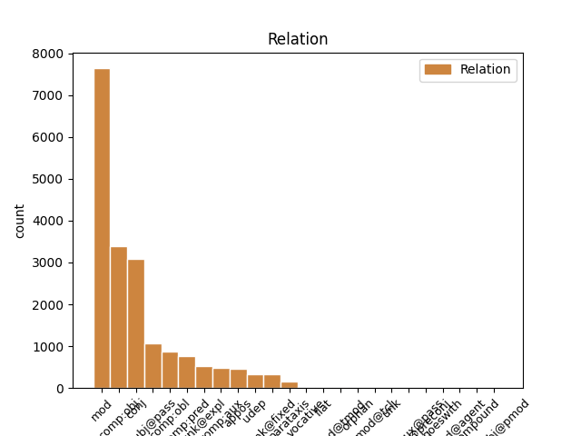
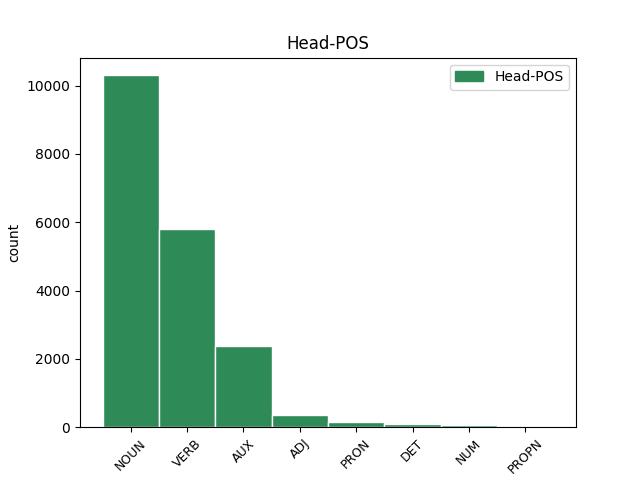
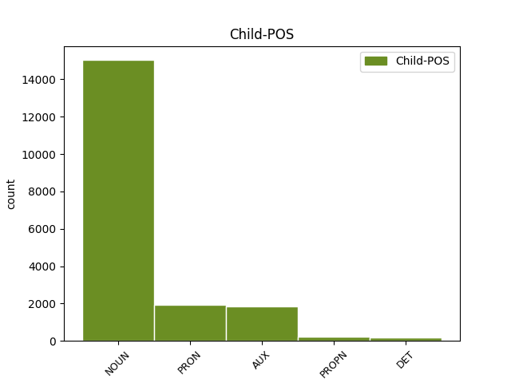

Distribution of features within this leaf



Agreement Rules sorted by frequency.
- When the dependent token is the modifer(mod) of the head token, and the dependent token is NOUN.
1 Mediana mediană NOUN Ncfsry Case=Acc,Nom|Definite=Def|Gender=Fem|Number=Sing 0 _ _ _
2 me _ _ _ _ 0 _ _ _
3 a _ _ _ _ 0 _ _ _
4 unui _ _ _ _ 0 _ _ _
5 set set NOUN Ncms-n Definite=Ind|Gender=Masc|Number=Sing 1 mod _ _
6 de _ _ _ _ 0 _ _ _
7 date _ _ _ _ 0 _ _ _
8 statistice _ _ _ _ 0 _ _ _
9 distincte _ _ _ _ 0 _ _ _
10 ordonate _ _ _ _ 0 _ _ _
11 după _ _ _ _ 0 _ _ _
12 mărime _ _ _ _ 0 _ _ _
13 x1 _ _ _ _ 0 _ _ _
14 < _ _ _ _ 0 _ _ _
15 x2 _ _ _ _ 0 _ _ _
16 < _ _ _ _ 0 _ _ _
17 ... _ _ _ _ 0 _ _ _
18 < _ _ _ _ 0 _ _ _
19 xn _ _ _ _ 0 _ _ _
20 este _ _ _ _ 0 _ _ _
21 numărul _ _ _ _ 0 _ _ _
22 care _ _ _ _ 0 _ _ _
23 împarte _ _ _ _ 0 _ _ _
24 setul _ _ _ _ 0 _ _ _
25 de _ _ _ _ 0 _ _ _
26 date _ _ _ _ 0 _ _ _
27 în _ _ _ _ 0 _ _ _
28 două _ _ _ _ 0 _ _ _
29 grupe _ _ _ _ 0 _ _ _
30 egale _ _ _ _ 0 _ _ _
31 ca _ _ _ _ 0 _ _ _
32 număr _ _ _ _ 0 _ _ _
33 . _ _ _ _ 0 _ _ _
1 Parametri parametru NOUN Ncmp-n Definite=Ind|Gender=Masc|Number=Plur 0 _ _ _
2 și _ _ _ _ 0 _ _ _
3 statistici statistică NOUN Ncfp-n Definite=Ind|Gender=Fem|Number=Plur 1 conj _ _
4 ai _ _ _ _ 0 _ _ _
5 poziției _ _ _ _ 0 _ _ _
6 se _ _ _ _ 0 _ _ _
7 folosesc _ _ _ _ 0 _ _ _
8 pentru _ _ _ _ 0 _ _ _
9 a _ _ _ _ 0 _ _ _
10 descrie _ _ _ _ 0 _ _ _
11 locația _ _ _ _ 0 _ _ _
12 unei _ _ _ _ 0 _ _ _
13 date _ _ _ _ 0 _ _ _
14 în _ _ _ _ 0 _ _ _
15 raport _ _ _ _ 0 _ _ _
16 cu _ _ _ _ 0 _ _ _
17 celelalte _ _ _ _ 0 _ _ _
18 date _ _ _ _ 0 _ _ _
19 . _ _ _ _ 0 _ _ _
1 Mediana _ _ _ _ 0 _ _ _
2 me _ _ _ _ 0 _ _ _
3 a _ _ _ _ 0 _ _ _
4 unui _ _ _ _ 0 _ _ _
5 set _ _ _ _ 0 _ _ _
6 de _ _ _ _ 0 _ _ _
7 date _ _ _ _ 0 _ _ _
8 statistice _ _ _ _ 0 _ _ _
9 distincte _ _ _ _ 0 _ _ _
10 ordonate _ _ _ _ 0 _ _ _
11 după _ _ _ _ 0 _ _ _
12 mărime _ _ _ _ 0 _ _ _
13 x1 _ _ _ _ 0 _ _ _
14 < _ _ _ _ 0 _ _ _
15 x2 _ _ _ _ 0 _ _ _
16 < _ _ _ _ 0 _ _ _
17 ... _ _ _ _ 0 _ _ _
18 < _ _ _ _ 0 _ _ _
19 xn _ _ _ _ 0 _ _ _
20 este _ _ _ _ 0 _ _ _
21 numărul _ _ _ _ 0 _ _ _
22 care _ _ _ _ 0 _ _ _
23 împarte împărți VERB Vmip3s Mood=Ind|Number=Sing|Person=3|Tense=Pres|VerbForm=Fin 0 _ _ _
24 setul set NOUN Ncmsry Case=Acc,Nom|Definite=Def|Gender=Masc|Number=Sing 23 comp:obj _ _
25 de _ _ _ _ 0 _ _ _
26 date _ _ _ _ 0 _ _ _
27 în _ _ _ _ 0 _ _ _
28 două _ _ _ _ 0 _ _ _
29 grupe _ _ _ _ 0 _ _ _
30 egale _ _ _ _ 0 _ _ _
31 ca _ _ _ _ 0 _ _ _
32 număr _ _ _ _ 0 _ _ _
33 . _ _ _ _ 0 _ _ _
1 Parametri parametru NOUN Ncmp-n Definite=Ind|Gender=Masc|Number=Plur 7 subj@pass _ _
2 și _ _ _ _ 0 _ _ _
3 statistici _ _ _ _ 0 _ _ _
4 ai _ _ _ _ 0 _ _ _
5 poziției _ _ _ _ 0 _ _ _
6 se _ _ _ _ 0 _ _ _
7 folosesc folosi VERB Vmip3p Mood=Ind|Number=Plur|Person=3|Tense=Pres|VerbForm=Fin 0 _ _ _
8 pentru _ _ _ _ 0 _ _ _
9 a _ _ _ _ 0 _ _ _
10 descrie _ _ _ _ 0 _ _ _
11 locația _ _ _ _ 0 _ _ _
12 unei _ _ _ _ 0 _ _ _
13 date _ _ _ _ 0 _ _ _
14 în _ _ _ _ 0 _ _ _
15 raport _ _ _ _ 0 _ _ _
16 cu _ _ _ _ 0 _ _ _
17 celelalte _ _ _ _ 0 _ _ _
18 date _ _ _ _ 0 _ _ _
19 . _ _ _ _ 0 _ _ _
1 Mediana _ _ _ _ 0 _ _ _
2 me _ _ _ _ 0 _ _ _
3 a _ _ _ _ 0 _ _ _
4 unui _ _ _ _ 0 _ _ _
5 set _ _ _ _ 0 _ _ _
6 de _ _ _ _ 0 _ _ _
7 date _ _ _ _ 0 _ _ _
8 statistice _ _ _ _ 0 _ _ _
9 distincte _ _ _ _ 0 _ _ _
10 ordonate _ _ _ _ 0 _ _ _
11 după _ _ _ _ 0 _ _ _
12 mărime _ _ _ _ 0 _ _ _
13 x1 _ _ _ _ 0 _ _ _
14 < _ _ _ _ 0 _ _ _
15 x2 _ _ _ _ 0 _ _ _
16 < _ _ _ _ 0 _ _ _
17 ... _ _ _ _ 0 _ _ _
18 < _ _ _ _ 0 _ _ _
19 xn _ _ _ _ 0 _ _ _
20 este fi AUX Vmip3s Mood=Ind|Number=Sing|Person=3|Tense=Pres|VerbForm=Fin 0 _ _ _
21 numărul număr NOUN Ncmsry Case=Acc,Nom|Definite=Def|Gender=Masc|Number=Sing 20 comp:pred _ _
22 care _ _ _ _ 0 _ _ _
23 împarte _ _ _ _ 0 _ _ _
24 setul _ _ _ _ 0 _ _ _
25 de _ _ _ _ 0 _ _ _
26 date _ _ _ _ 0 _ _ _
27 în _ _ _ _ 0 _ _ _
28 două _ _ _ _ 0 _ _ _
29 grupe _ _ _ _ 0 _ _ _
30 egale _ _ _ _ 0 _ _ _
31 ca _ _ _ _ 0 _ _ _
32 număr _ _ _ _ 0 _ _ _
33 . _ _ _ _ 0 _ _ _
1 Un _ _ _ _ 0 _ _ _
2 răspuns _ _ _ _ 0 _ _ _
3 la _ _ _ _ 0 _ _ _
4 această _ _ _ _ 0 _ _ _
5 întrebare _ _ _ _ 0 _ _ _
6 poate _ _ _ _ 0 _ _ _
7 fi _ _ _ _ 0 _ _ _
8 dat _ _ _ _ 0 _ _ _
9 cu _ _ _ _ 0 _ _ _
10 inegalitatea _ _ _ _ 0 _ _ _
11 lui _ _ _ _ 0 _ _ _
12 Cebîșev _ _ _ _ 0 _ _ _
13 din _ _ _ _ 0 _ _ _
14 care _ _ _ _ 0 _ _ _
15 rezultă _ _ _ _ 0 _ _ _
16 că _ _ _ _ 0 _ _ _
17 pentru _ _ _ _ 0 _ _ _
18 orice _ _ _ _ 0 _ _ _
19 serie _ _ _ _ 0 _ _ _
20 de _ _ _ _ 0 _ _ _
21 distribuție _ _ _ _ 0 _ _ _
22 fracțiunea _ _ _ _ 0 _ _ _
23 de _ _ _ _ 0 _ _ _
24 date _ _ _ _ 0 _ _ _
25 situată _ _ _ _ 0 _ _ _
26 la _ _ _ _ 0 _ _ _
27 cel _ _ _ _ 0 _ _ _
28 mult _ _ _ _ 0 _ _ _
29 k _ _ _ _ 0 _ _ _
30 unități _ _ _ _ 0 _ _ _
31 de _ _ _ _ 0 _ _ _
32 deviație _ _ _ _ 0 _ _ _
33 standard _ _ _ _ 0 _ _ _
34 față _ _ _ _ 0 _ _ _
35 de _ _ _ _ 0 _ _ _
36 medie _ _ _ _ 0 _ _ _
37 este fi AUX Vmip3s Mood=Ind|Number=Sing|Person=3|Tense=Pres|VerbForm=Fin 0 _ _ _
38 cel _ _ _ _ 0 _ _ _
39 puțin _ _ _ _ 0 _ _ _
40 1 _ _ _ _ 0 _ _ _
41 - _ _ _ _ 0 _ _ _
42 1 _ _ _ _ 0 _ _ _
43 / _ _ _ _ 0 _ _ _
44 ( _ _ _ _ 0 _ _ _
45 k _ _ _ _ 0 _ _ _
46 * _ _ _ _ 0 _ _ _
47 k _ _ _ _ 0 _ _ _
48 ) _ _ _ _ 0 _ _ _
49 , _ _ _ _ 0 _ _ _
50 unde _ _ _ _ 0 _ _ _
51 k _ _ _ _ 0 _ _ _
52 este fi AUX Vmip3s Mood=Ind|Number=Sing|Person=3|Tense=Pres|VerbForm=Fin 37 mod _ _
53 un _ _ _ _ 0 _ _ _
54 număr _ _ _ _ 0 _ _ _
55 pozitiv _ _ _ _ 0 _ _ _
56 oarecare _ _ _ _ 0 _ _ _
57 mai _ _ _ _ 0 _ _ _
58 mare _ _ _ _ 0 _ _ _
59 ca _ _ _ _ 0 _ _ _
60 1 _ _ _ _ 0 _ _ _
61 . _ _ _ _ 0 _ _ _
1 Dacă _ _ _ _ 0 _ _ _
2 V _ _ _ _ 0 _ _ _
3 este _ _ _ _ 0 _ _ _
4 aproape _ _ _ _ 0 _ _ _
5 de _ _ _ _ 0 _ _ _
6 zero _ _ _ _ 0 _ _ _
7 ( _ _ _ _ 0 _ _ _
8 V _ _ _ _ 0 _ _ _
9 < _ _ _ _ 0 _ _ _
10 35% _ _ _ _ 0 _ _ _
11 ) _ _ _ _ 0 _ _ _
12 , _ _ _ _ 0 _ _ _
13 atunci _ _ _ _ 0 _ _ _
14 populația _ _ _ _ 0 _ _ _
15 studiată _ _ _ _ 0 _ _ _
16 statistic _ _ _ _ 0 _ _ _
17 este fi AUX Vmip3s Mood=Ind|Number=Sing|Person=3|Tense=Pres|VerbForm=Fin 0 _ _ _
18 omogenă _ _ _ _ 0 _ _ _
19 și _ _ _ _ 0 _ _ _
20 media _ _ _ _ 0 _ _ _
21 m _ _ _ _ 0 _ _ _
22 este fi AUX Vmip3s Mood=Ind|Number=Sing|Person=3|Tense=Pres|VerbForm=Fin 17 conj _ _
23 reprezentativă _ _ _ _ 0 _ _ _
24 pentru _ _ _ _ 0 _ _ _
25 această _ _ _ _ 0 _ _ _
26 populație _ _ _ _ 0 _ _ _
27 . _ _ _ _ 0 _ _ _
1 te _ _ _ _ 0 _ _ _
2 poți _ _ _ _ 0 _ _ _
3 gândi _ _ _ _ 0 _ _ _
4 chiar _ _ _ _ 0 _ _ _
5 fără _ _ _ _ 0 _ _ _
6 ajutorul _ _ _ _ 0 _ _ _
7 tabloului _ _ _ _ 0 _ _ _
8 să _ _ _ _ 0 _ _ _
9 faci _ _ _ _ 0 _ _ _
10 comparații _ _ _ _ 0 _ _ _
11 din _ _ _ _ 0 _ _ _
12 memorie _ _ _ _ 0 _ _ _
13 , _ _ _ _ 0 _ _ _
14 relative _ _ _ _ 0 _ _ _
15 la _ _ _ _ 0 _ _ _
16 pielea _ _ _ _ 0 _ _ _
17 , _ _ _ _ 0 _ _ _
18 cum _ _ _ _ 0 _ _ _
19 spui spune VERB Vmip2s Mood=Ind|Number=Sing|Person=2|Tense=Pres|VerbForm=Fin 0 _ _ _
20 dumneata dumneata PRON Pp2-sr--------s Case=Acc,Nom|Number=Sing|Person=2|PronType=Prs|Strength=Strong 19 comp:obj _ SpaceAfter=No
21 , _ _ _ _ 0 _ _ _
22 a _ _ _ _ 0 _ _ _
23 racului _ _ _ _ 0 _ _ _
24 și _ _ _ _ 0 _ _ _
25 a _ _ _ _ 0 _ _ _
26 celorlalte _ _ _ _ 0 _ _ _
27 animale _ _ _ _ 0 _ _ _
28 de _ _ _ _ 0 _ _ _
29 apă _ _ _ _ 0 _ _ _
30 care _ _ _ _ 0 _ _ _
31 -l _ _ _ _ 0 _ _ _
32 înconjoară _ _ _ _ 0 _ _ _
33 . _ _ _ _ 0 _ _ _
1 Rezultă _ _ _ _ 0 _ _ _
2 imediat _ _ _ _ 0 _ _ _
3 că _ _ _ _ 0 _ _ _
4 mulțimea _ _ _ _ 0 _ _ _
5 Q _ _ _ _ 0 _ _ _
6 a _ _ _ _ 0 _ _ _
7 tuturor _ _ _ _ 0 _ _ _
8 numerelor _ _ _ _ 0 _ _ _
9 raționale _ _ _ _ 0 _ _ _
10 este fi AUX Vmip3s Mood=Ind|Number=Sing|Person=3|Tense=Pres|VerbForm=Fin 0 _ _ _
11 și _ _ _ _ 0 _ _ _
12 ea el PRON Pp3fsr--------s Case=Acc,Nom|Gender=Fem|Number=Sing|Person=3|PronType=Prs|Strength=Strong 10 unk@expl _ _
13 numărabilă _ _ _ _ 0 _ _ _
14 . _ _ _ _ 0 _ _ _
1 Deviația _ _ _ _ 0 _ _ _
2 standard _ _ _ _ 0 _ _ _
3 a avea AUX Va--3s Number=Sing|Person=3 0 _ _ _
4 fost fi AUX Vap--sm Gender=Masc|Number=Sing|VerbForm=Part 3 comp:aux _ _
5 definită _ _ _ _ 0 _ _ _
6 cu _ _ _ _ 0 _ _ _
7 o _ _ _ _ 0 _ _ _
8 formulă _ _ _ _ 0 _ _ _
9 . _ _ _ _ 0 _ _ _
1 Coeficientul _ _ _ _ 0 _ _ _
2 de _ _ _ _ 0 _ _ _
3 variație _ _ _ _ 0 _ _ _
4 este _ _ _ _ 0 _ _ _
5 o _ _ _ _ 0 _ _ _
6 statistică _ _ _ _ 0 _ _ _
7 relativă _ _ _ _ 0 _ _ _
8 a _ _ _ _ 0 _ _ _
9 dispersiei _ _ _ _ 0 _ _ _
10 și _ _ _ _ 0 _ _ _
11 se _ _ _ _ 0 _ _ _
12 folosește _ _ _ _ 0 _ _ _
13 la _ _ _ _ 0 _ _ _
14 compararea _ _ _ _ 0 _ _ _
15 dispersiei _ _ _ _ 0 _ _ _
16 diferitelor _ _ _ _ 0 _ _ _
17 variabile variabilă NOUN Ncfp-n Definite=Ind|Gender=Fem|Number=Plur 0 _ _ _
18 ( _ _ _ _ 0 _ _ _
19 caracteristici caracteristică NOUN Ncfp-n Definite=Ind|Gender=Fem|Number=Plur 17 appos _ SpaceAfter=No
20 ) _ _ _ _ 0 _ _ _
21 . _ _ _ _ 0 _ _ _
1 Considerăm _ _ _ _ 0 _ _ _
2 o _ _ _ _ 0 _ _ _
3 populație _ _ _ _ 0 _ _ _
4 a _ _ _ _ 0 _ _ _
5 cărei _ _ _ _ 0 _ _ _
6 medie _ _ _ _ 0 _ _ _
7 nu _ _ _ _ 0 _ _ _
8 o _ _ _ _ 0 _ _ _
9 cunoaștem _ _ _ _ 0 _ _ _
10 și _ _ _ _ 0 _ _ _
11 ne eu PRON Pp1-pd--------w Case=Dat|Number=Plur|Person=1|PronType=Prs|Strength=Weak 12 comp:obl _ _
12 punem pune VERB Vmip1p Mood=Ind|Number=Plur|Person=1|Tense=Pres|VerbForm=Fin 0 _ _ _
13 problema _ _ _ _ 0 _ _ _
14 s- _ _ _ _ 0 _ _ _
15 o _ _ _ _ 0 _ _ _
16 găsim _ _ _ _ 0 _ _ _
17 . _ _ _ _ 0 _ _ _
1 Noțiunea _ _ _ _ 0 _ _ _
2 de _ _ _ _ 0 _ _ _
3 spațiu _ _ _ _ 0 _ _ _
4 metric _ _ _ _ 0 _ _ _
5 este _ _ _ _ 0 _ _ _
6 mult _ _ _ _ 0 _ _ _
7 mai _ _ _ _ 0 _ _ _
8 generală _ _ _ _ 0 _ _ _
9 decât _ _ _ _ 0 _ _ _
10 cea _ _ _ _ 0 _ _ _
11 de _ _ _ _ 0 _ _ _
12 spațiu _ _ _ _ 0 _ _ _
13 normat _ _ _ _ 0 _ _ _
14 și _ _ _ _ 0 _ _ _
15 în _ _ _ _ 0 _ _ _
16 același același DET Dd3msr---e Case=Acc,Nom|Gender=Masc|Number=Sing|Person=3|Position=Prenom|PronType=Dem 0 _ _ _
17 timp timp NOUN Ncms-n Definite=Ind|Gender=Masc|Number=Sing 16 unk@fixed _ _
18 cu _ _ _ _ 0 _ _ _
19 o _ _ _ _ 0 _ _ _
20 structură _ _ _ _ 0 _ _ _
21 matematică _ _ _ _ 0 _ _ _
22 mult _ _ _ _ 0 _ _ _
23 mai _ _ _ _ 0 _ _ _
24 săracă _ _ _ _ 0 _ _ _
25 . _ _ _ _ 0 _ _ _
1 Unele _ _ _ _ 0 _ _ _
2 dintre _ _ _ _ 0 _ _ _
3 aceste _ _ _ _ 0 _ _ _
4 noțiuni _ _ _ _ 0 _ _ _
5 pot _ _ _ _ 0 _ _ _
6 fi _ _ _ _ 0 _ _ _
7 extinse _ _ _ _ 0 _ _ _
8 pentru _ _ _ _ 0 _ _ _
9 a _ _ _ _ 0 _ _ _
10 deveni _ _ _ _ 0 _ _ _
11 aplicabile aplicabil ADJ Afpfp-n Definite=Ind|Degree=Pos|Gender=Fem|Number=Plur 0 _ _ _
12 șirurilor șir NOUN Ncfpoy Case=Dat,Gen|Definite=Def|Gender=Fem|Number=Plur 11 comp:obl _ _
13 de _ _ _ _ 0 _ _ _
14 elemente _ _ _ _ 0 _ _ _
15 din _ _ _ _ 0 _ _ _
16 spații _ _ _ _ 0 _ _ _
17 mult _ _ _ _ 0 _ _ _
18 mai _ _ _ _ 0 _ _ _
19 generale _ _ _ _ 0 _ _ _
20 . _ _ _ _ 0 _ _ _
1 Rezultă _ _ _ _ 0 _ _ _
2 în _ _ _ _ 0 _ _ _
3 particular _ _ _ _ 0 _ _ _
4 că _ _ _ _ 0 _ _ _
5 pentru _ _ _ _ 0 _ _ _
6 orice _ _ _ _ 0 _ _ _
7 serie _ _ _ _ 0 _ _ _
8 de _ _ _ _ 0 _ _ _
9 distribuție _ _ _ _ 0 _ _ _
10 fracțiunea _ _ _ _ 0 _ _ _
11 de _ _ _ _ 0 _ _ _
12 date _ _ _ _ 0 _ _ _
13 situată situa VERB Vmp--sf Gender=Fem|Number=Sing|VerbForm=Part 0 _ _ _
14 la _ _ _ _ 0 _ _ _
15 cel _ _ _ _ 0 _ _ _
16 mult _ _ _ _ 0 _ _ _
17 k _ _ _ _ 0 _ _ _
18 = _ _ _ _ 0 _ _ _
19 2 _ _ _ _ 0 _ _ _
20 unități _ _ _ _ 0 _ _ _
21 de _ _ _ _ 0 _ _ _
22 deviație _ _ _ _ 0 _ _ _
23 standard _ _ _ _ 0 _ _ _
24 față față NOUN Ncfsrn Case=Acc,Nom|Definite=Ind|Gender=Fem|Number=Sing 13 udep _ _
25 de _ _ _ _ 0 _ _ _
26 medie _ _ _ _ 0 _ _ _
27 este _ _ _ _ 0 _ _ _
28 de _ _ _ _ 0 _ _ _
29 cel _ _ _ _ 0 _ _ _
30 puțin _ _ _ _ 0 _ _ _
31 75% _ _ _ _ 0 _ _ _
32 din _ _ _ _ 0 _ _ _
33 totalul _ _ _ _ 0 _ _ _
34 de _ _ _ _ 0 _ _ _
35 date _ _ _ _ 0 _ _ _
36 . _ _ _ _ 0 _ _ _
1 După _ _ _ _ 0 _ _ _
2 un _ _ _ _ 0 _ _ _
3 deceniu _ _ _ _ 0 _ _ _
4 de _ _ _ _ 0 _ _ _
5 probleme _ _ _ _ 0 _ _ _
6 economice _ _ _ _ 0 _ _ _
7 , _ _ _ _ 0 _ _ _
8 România _ _ _ _ 0 _ _ _
9 a _ _ _ _ 0 _ _ _
10 introdus _ _ _ _ 0 _ _ _
11 noi eu PRON Pp1-pr--------s Case=Acc,Nom|Number=Plur|Person=1|PronType=Prs|Strength=Strong 12 mod _ _
12 reforme reformă NOUN Ncfp-n Definite=Ind|Gender=Fem|Number=Plur 0 _ _ _
13 economice _ _ _ _ 0 _ _ _
14 de _ _ _ _ 0 _ _ _
15 ordin _ _ _ _ 0 _ _ _
16 general _ _ _ _ 0 _ _ _
17 ( _ _ _ _ 0 _ _ _
18 precum _ _ _ _ 0 _ _ _
19 cota _ _ _ _ 0 _ _ _
20 unică _ _ _ _ 0 _ _ _
21 de _ _ _ _ 0 _ _ _
22 impozitare _ _ _ _ 0 _ _ _
23 , _ _ _ _ 0 _ _ _
24 în _ _ _ _ 0 _ _ _
25 2005 _ _ _ _ 0 _ _ _
26 ) _ _ _ _ 0 _ _ _
27 și _ _ _ _ 0 _ _ _
28 a _ _ _ _ 0 _ _ _
29 aderat _ _ _ _ 0 _ _ _
30 la _ _ _ _ 0 _ _ _
31 Uniunea _ _ _ _ 0 _ _ _
32 Europeana _ _ _ _ 0 _ _ _
33 la _ _ _ _ 0 _ _ _
34 1 _ _ _ _ 0 _ _ _
35 ianuarie _ _ _ _ 0 _ _ _
36 2007 _ _ _ _ 0 _ _ _
37 . _ _ _ _ 0 _ _ _
1 Iași _ _ _ _ 0 _ _ _
2 este _ _ _ _ 0 _ _ _
3 centrul centru NOUN Ncmsry Case=Acc,Nom|Definite=Def|Gender=Masc|Number=Sing 0 _ _ _
4 cultural _ _ _ _ 0 _ _ _
5 , _ _ _ _ 0 _ _ _
6 economic _ _ _ _ 0 _ _ _
7 și _ _ _ _ 0 _ _ _
8 academic _ _ _ _ 0 _ _ _
9 al _ _ _ _ 0 _ _ _
10 Moldovei Moldova PROPN Npfsoy Case=Dat,Gen|Definite=Def|Gender=Fem|Number=Sing 3 mod _ SpaceAfter=No|ToDo=nmod
11 . _ _ _ _ 0 _ _ _
1 Conform _ _ _ _ 0 _ _ _
2 regulii _ _ _ _ 0 _ _ _
3 empirice _ _ _ _ 0 _ _ _
4 dacă _ _ _ _ 0 _ _ _
5 o _ _ _ _ 0 _ _ _
6 serie _ _ _ _ 0 _ _ _
7 de _ _ _ _ 0 _ _ _
8 repartiție _ _ _ _ 0 _ _ _
9 este _ _ _ _ 0 _ _ _
10 normală _ _ _ _ 0 _ _ _
11 atunci _ _ _ _ 0 _ _ _
12 fracțiunea _ _ _ _ 0 _ _ _
13 de _ _ _ _ 0 _ _ _
14 date _ _ _ _ 0 _ _ _
15 situate _ _ _ _ 0 _ _ _
16 la _ _ _ _ 0 _ _ _
17 cel _ _ _ _ 0 _ _ _
18 mult _ _ _ _ 0 _ _ _
19 o un DET Tifsr Case=Acc,Nom|Gender=Fem|Number=Sing|PronType=Ind 20 mod _ _
20 unitate unitate NOUN Ncfsrn Case=Acc,Nom|Definite=Ind|Gender=Fem|Number=Sing 0 _ _ _
21 de _ _ _ _ 0 _ _ _
22 deviație _ _ _ _ 0 _ _ _
23 standard _ _ _ _ 0 _ _ _
24 s _ _ _ _ 0 _ _ _
25 față _ _ _ _ 0 _ _ _
26 de _ _ _ _ 0 _ _ _
27 medie _ _ _ _ 0 _ _ _
28 este _ _ _ _ 0 _ _ _
29 aproximativ _ _ _ _ 0 _ _ _
30 68% _ _ _ _ 0 _ _ _
31 , _ _ _ _ 0 _ _ _
32 iar _ _ _ _ 0 _ _ _
33 fracțiunea _ _ _ _ 0 _ _ _
34 de _ _ _ _ 0 _ _ _
35 date _ _ _ _ 0 _ _ _
36 situate _ _ _ _ 0 _ _ _
37 la _ _ _ _ 0 _ _ _
38 cel _ _ _ _ 0 _ _ _
39 mult _ _ _ _ 0 _ _ _
40 două _ _ _ _ 0 _ _ _
41 unități _ _ _ _ 0 _ _ _
42 de _ _ _ _ 0 _ _ _
43 deviație _ _ _ _ 0 _ _ _
44 standard _ _ _ _ 0 _ _ _
45 s _ _ _ _ 0 _ _ _
46 față _ _ _ _ 0 _ _ _
47 de _ _ _ _ 0 _ _ _
48 medie _ _ _ _ 0 _ _ _
49 este _ _ _ _ 0 _ _ _
50 aproximativ _ _ _ _ 0 _ _ _
51 95% _ _ _ _ 0 _ _ _
52 . _ _ _ _ 0 _ _ _
1 Pentru _ _ _ _ 0 _ _ _
2 a _ _ _ _ 0 _ _ _
3 ilustra _ _ _ _ 0 _ _ _
4 însă _ _ _ _ 0 _ _ _
5 diferența _ _ _ _ 0 _ _ _
6 dintre _ _ _ _ 0 _ _ _
7 probabilități _ _ _ _ 0 _ _ _
8 și _ _ _ _ 0 _ _ _
9 statistică _ _ _ _ 0 _ _ _
10 să _ _ _ _ 0 _ _ _
11 considerăm _ _ _ _ 0 _ _ _
12 două _ _ _ _ 0 _ _ _
13 urne _ _ _ _ 0 _ _ _
14 : _ _ _ _ 0 _ _ _
15 una unul PRON Pi3fsr Case=Acc,Nom|Gender=Fem|Number=Sing|Person=3|PronType=Ind 0 _ _ _
16 probabilistă _ _ _ _ 0 _ _ _
17 și _ _ _ _ 0 _ _ _
18 una unul PRON Pi3fsr Case=Acc,Nom|Gender=Fem|Number=Sing|Person=3|PronType=Ind 15 conj _ _
19 statistică _ _ _ _ 0 _ _ _
20 . _ _ _ _ 0 _ _ _
1 Eșantioane _ _ _ _ 0 _ _ _
2 bazate _ _ _ _ 0 _ _ _
3 pe _ _ _ _ 0 _ _ _
4 reprezentativitate _ _ _ _ 0 _ _ _
5 sunt fi AUX Vmip3p Mood=Ind|Number=Plur|Person=3|Tense=Pres|VerbForm=Fin 0 _ _ _
6 acelea acela PRON Pd3fpr Case=Acc,Nom|Gender=Fem|Number=Plur|Person=3|PronType=Dem 5 comp:pred _ _
7 pentru _ _ _ _ 0 _ _ _
8 care _ _ _ _ 0 _ _ _
9 elementele _ _ _ _ 0 _ _ _
10 se _ _ _ _ 0 _ _ _
11 aleg _ _ _ _ 0 _ _ _
12 astfel _ _ _ _ 0 _ _ _
13 încât _ _ _ _ 0 _ _ _
14 din _ _ _ _ 0 _ _ _
15 perspectiva _ _ _ _ 0 _ _ _
16 variabilei _ _ _ _ 0 _ _ _
17 de _ _ _ _ 0 _ _ _
18 răspuns _ _ _ _ 0 _ _ _
19 , _ _ _ _ 0 _ _ _
20 elementul _ _ _ _ 0 _ _ _
21 ales _ _ _ _ 0 _ _ _
22 să _ _ _ _ 0 _ _ _
23 fie _ _ _ _ 0 _ _ _
24 reprezentativ _ _ _ _ 0 _ _ _
25 pentru _ _ _ _ 0 _ _ _
26 populație _ _ _ _ 0 _ _ _
27 . _ _ _ _ 0 _ _ _
1 Curentul _ _ _ _ 0 _ _ _
2 rectificator _ _ _ _ 0 _ _ _
3 ( _ _ _ _ 0 _ _ _
4 IKir _ _ _ _ 0 _ _ _
5 ) _ _ _ _ 0 _ _ _
6 care _ _ _ _ 0 _ _ _
7 asigura _ _ _ _ 0 _ _ _
8 efluxul _ _ _ _ 0 _ _ _
9 bazal _ _ _ _ 0 _ _ _
10 de _ _ _ _ 0 _ _ _
11 K _ _ _ _ 0 _ _ _
12 + _ _ _ _ 0 _ _ _
13 se _ _ _ _ 0 _ _ _
14 reduce reduce VERB Vmip3s Mood=Ind|Number=Sing|Person=3|Tense=Pres|VerbForm=Fin 0 _ _ _
15 foarte _ _ _ _ 0 _ _ _
16 mult _ _ _ _ 0 _ _ _
17 în _ _ _ _ 0 _ _ _
18 această _ _ _ _ 0 _ _ _
19 fază _ _ _ _ 0 _ _ _
20 , _ _ _ _ 0 _ _ _
21 fenomen fenomen NOUN Ncms-n Definite=Ind|Gender=Masc|Number=Sing 14 parataxis _ _
22 cunoscut _ _ _ _ 0 _ _ _
23 sub _ _ _ _ 0 _ _ _
24 numele _ _ _ _ 0 _ _ _
25 de _ _ _ _ 0 _ _ _
26 rectificare _ _ _ _ 0 _ _ _
27 anormală _ _ _ _ 0 _ _ _
28 , _ _ _ _ 0 _ _ _
29 jucând _ _ _ _ 0 _ _ _
30 un _ _ _ _ 0 _ _ _
31 rol _ _ _ _ 0 _ _ _
32 important _ _ _ _ 0 _ _ _
33 în _ _ _ _ 0 _ _ _
34 întârzierea _ _ _ _ 0 _ _ _
35 repolarizării _ _ _ _ 0 _ _ _
36 comparativ _ _ _ _ 0 _ _ _
37 cu _ _ _ _ 0 _ _ _
38 celula _ _ _ _ 0 _ _ _
39 nervoasă _ _ _ _ 0 _ _ _
40 . _ _ _ _ 0 _ _ _
1 Ele el PRON Pp3fpr--------s Case=Acc,Nom|Gender=Fem|Number=Plur|Person=3|PronType=Prs|Strength=Strong 2 subj@pass _ _
2 sunt fi AUX Vaip3p Mood=Ind|Number=Plur|Person=3|Tense=Pres|VerbForm=Fin 0 _ _ _
3 produse _ _ _ _ 0 _ _ _
4 prin _ _ _ _ 0 _ _ _
5 bombardarea _ _ _ _ 0 _ _ _
6 unei _ _ _ _ 0 _ _ _
7 ținte _ _ _ _ 0 _ _ _
8 metalice _ _ _ _ 0 _ _ _
9 de _ _ _ _ 0 _ _ _
10 către _ _ _ _ 0 _ _ _
11 electroni _ _ _ _ 0 _ _ _
12 de _ _ _ _ 0 _ _ _
13 mare _ _ _ _ 0 _ _ _
14 energie _ _ _ _ 0 _ _ _
15 . _ _ _ _ 0 _ _ _
1 Aici _ _ _ _ 0 _ _ _
2 funcționează _ _ _ _ 0 _ _ _
3 Universitatea universitate NOUN Ncfsry Case=Acc,Nom|Definite=Def|Gender=Fem|Number=Sing 0 _ _ _
4 Alexandru _ _ _ _ 0 _ _ _
5 Ioan _ _ _ _ 0 _ _ _
6 Cuza _ _ _ _ 0 _ _ _
7 , _ _ _ _ 0 _ _ _
8 una unul PRON Pi3fsr Case=Acc,Nom|Gender=Fem|Number=Sing|Person=3|PronType=Ind 3 appos _ _
9 din _ _ _ _ 0 _ _ _
10 cele _ _ _ _ 0 _ _ _
11 mai _ _ _ _ 0 _ _ _
12 prestigioase _ _ _ _ 0 _ _ _
13 instituții _ _ _ _ 0 _ _ _
14 academice _ _ _ _ 0 _ _ _
15 din _ _ _ _ 0 _ _ _
16 România _ _ _ _ 0 _ _ _
17 , _ _ _ _ 0 _ _ _
18 precum _ _ _ _ 0 _ _ _
19 și _ _ _ _ 0 _ _ _
20 alte _ _ _ _ 0 _ _ _
21 patru _ _ _ _ 0 _ _ _
22 universități _ _ _ _ 0 _ _ _
23 publice _ _ _ _ 0 _ _ _
24 și _ _ _ _ 0 _ _ _
25 șapte _ _ _ _ 0 _ _ _
26 particulare _ _ _ _ 0 _ _ _
27 . _ _ _ _ 0 _ _ _
1 Un _ _ _ _ 0 _ _ _
2 obiect _ _ _ _ 0 _ _ _
3 este fi AUX Vmip3s Mood=Ind|Number=Sing|Person=3|Tense=Pres|VerbForm=Fin 0 _ _ _
4 un _ _ _ _ 0 _ _ _
5 exemplar _ _ _ _ 0 _ _ _
6 sau _ _ _ _ 0 _ _ _
7 o _ _ _ _ 0 _ _ _
8 instanță _ _ _ _ 0 _ _ _
9 a _ _ _ _ 0 _ _ _
10 unei _ _ _ _ 0 _ _ _
11 clase _ _ _ _ 0 _ _ _
12 ( _ _ _ _ 0 _ _ _
13 în _ _ _ _ 0 _ _ _
14 vechea _ _ _ _ 0 _ _ _
15 terminologie _ _ _ _ 0 _ _ _
16 obiectul _ _ _ _ 0 _ _ _
17 este fi AUX Vmip3s Mood=Ind|Number=Sing|Person=3|Tense=Pres|VerbForm=Fin 3 parataxis _ _
18 echivalent _ _ _ _ 0 _ _ _
19 unei _ _ _ _ 0 _ _ _
20 variabile _ _ _ _ 0 _ _ _
21 , _ _ _ _ 0 _ _ _
22 iar _ _ _ _ 0 _ _ _
23 clasa _ _ _ _ 0 _ _ _
24 este _ _ _ _ 0 _ _ _
25 echivalentul _ _ _ _ 0 _ _ _
26 unui _ _ _ _ 0 _ _ _
27 tip _ _ _ _ 0 _ _ _
28 definit _ _ _ _ 0 _ _ _
29 de _ _ _ _ 0 _ _ _
30 utilizator _ _ _ _ 0 _ _ _
31 ) _ _ _ _ 0 _ _ _
32 . _ _ _ _ 0 _ _ _
1 - _ _ _ _ 0 _ _ _
2 Domnișoară domnișoară NOUN Ncfsrn Case=Acc,Nom|Definite=Ind|Gender=Fem|Number=Sing 15 vocative _ _
3 Sultana _ _ _ _ 0 _ _ _
4 , _ _ _ _ 0 _ _ _
5 încercă _ _ _ _ 0 _ _ _
6 el _ _ _ _ 0 _ _ _
7 să _ _ _ _ 0 _ _ _
8 dea _ _ _ _ 0 _ _ _
9 convorbirii _ _ _ _ 0 _ _ _
10 o _ _ _ _ 0 _ _ _
11 ținută _ _ _ _ 0 _ _ _
12 oficială _ _ _ _ 0 _ _ _
13 , _ _ _ _ 0 _ _ _
14 nu _ _ _ _ 0 _ _ _
15 uita uita VERB Vmii3s Mood=Ind|Number=Sing|Person=3|Tense=Imp|VerbForm=Fin 0 _ _ _
16 că _ _ _ _ 0 _ _ _
17 sunt _ _ _ _ 0 _ _ _
18 prietenul _ _ _ _ 0 _ _ _
19 domnului _ _ _ _ 0 _ _ _
20 Manigomian _ _ _ _ 0 _ _ _
21 și _ _ _ _ 0 _ _ _
22 ca _ _ _ _ 0 _ _ _
23 atare _ _ _ _ 0 _ _ _
24 unul _ _ _ _ 0 _ _ _
25 care _ _ _ _ 0 _ _ _
26 mă _ _ _ _ 0 _ _ _
27 preocup _ _ _ _ 0 _ _ _
28 de _ _ _ _ 0 _ _ _
29 viitorul _ _ _ _ 0 _ _ _
30 dumitale _ _ _ _ 0 _ _ _
31 . _ _ _ _ 0 _ _ _
1 Cu _ _ _ _ 0 _ _ _
2 toate tot PRON Pi3fpr Case=Acc,Nom|Gender=Fem|Number=Plur|Person=3|PronType=Ind 0 _ _ _
3 acestea acesta PRON Pd3fpr Case=Acc,Nom|Gender=Fem|Number=Plur|Person=3|PronType=Dem 2 unk@fixed _ SpaceAfter=No
4 , _ _ _ _ 0 _ _ _
5 în _ _ _ _ 0 _ _ _
6 raportul _ _ _ _ 0 _ _ _
7 de _ _ _ _ 0 _ _ _
8 țară _ _ _ _ 0 _ _ _
9 din _ _ _ _ 0 _ _ _
10 2006 _ _ _ _ 0 _ _ _
11 , _ _ _ _ 0 _ _ _
12 România _ _ _ _ 0 _ _ _
13 și _ _ _ _ 0 _ _ _
14 Bulgaria _ _ _ _ 0 _ _ _
15 au _ _ _ _ 0 _ _ _
16 fost _ _ _ _ 0 _ _ _
17 descrise _ _ _ _ 0 _ _ _
18 ca _ _ _ _ 0 _ _ _
19 fiind _ _ _ _ 0 _ _ _
20 cele _ _ _ _ 0 _ _ _
21 mai _ _ _ _ 0 _ _ _
22 corupte _ _ _ _ 0 _ _ _
23 țări _ _ _ _ 0 _ _ _
24 ale _ _ _ _ 0 _ _ _
25 Uniunii _ _ _ _ 0 _ _ _
26 Europene _ _ _ _ 0 _ _ _
27 . _ _ _ _ 0 _ _ _
1 La _ _ _ _ 0 _ _ _
2 ieșirea _ _ _ _ 0 _ _ _
3 din _ _ _ _ 0 _ _ _
4 cabinet _ _ _ _ 0 _ _ _
5 , _ _ _ _ 0 _ _ _
6 nu _ _ _ _ 0 _ _ _
7 mai _ _ _ _ 0 _ _ _
8 putu _ _ _ _ 0 _ _ _
9 rezista _ _ _ _ 0 _ _ _
10 ispitei _ _ _ _ 0 _ _ _
11 și _ _ _ _ 0 _ _ _
12 întrebă întreba VERB Vmis3s Mood=Ind|Number=Sing|Person=3|Tense=Past|VerbForm=Fin 0 _ _ _
13 pe _ _ _ _ 0 _ _ _
14 doctor _ _ _ _ 0 _ _ _
15 ce _ _ _ _ 0 _ _ _
16 este fi AUX Vmip3s Mood=Ind|Number=Sing|Person=3|Tense=Pres|VerbForm=Fin 12 comp:obj _ _
17 acel _ _ _ _ 0 _ _ _
18 lucru _ _ _ _ 0 _ _ _
19 de _ _ _ _ 0 _ _ _
20 la _ _ _ _ 0 _ _ _
21 sobă _ _ _ _ 0 _ _ _
22 . _ _ _ _ 0 _ _ _
1 Dancu _ _ _ _ 0 _ _ _
2 , _ _ _ _ 0 _ _ _
3 Tomești _ _ _ _ 0 _ _ _
4 , _ _ _ _ 0 _ _ _
5 Ciurea _ _ _ _ 0 _ _ _
6 și _ _ _ _ 0 _ _ _
7 Lunca luncă NOUN Ncfsry Case=Acc,Nom|Definite=Def|Gender=Fem|Number=Sing 0 _ _ _
8 Cetățuii cetățuie NOUN Ncfsoy Case=Dat,Gen|Definite=Def|Gender=Fem|Number=Sing 7 mod@tmod _ SpaceAfter=No
9 . _ _ _ _ 0 _ _ _
1 Moș moș NOUN Ncms-n Definite=Ind|Gender=Masc|Number=Sing 0 _ _ _
2 Leu leu NOUN Ncms-n Definite=Ind|Gender=Masc|Number=Sing 1 flat _ _
3 îi _ _ _ _ 0 _ _ _
4 hrănise _ _ _ _ 0 _ _ _
5 mai _ _ _ _ 0 _ _ _
6 mult _ _ _ _ 0 _ _ _
7 cu _ _ _ _ 0 _ _ _
8 răbdări _ _ _ _ 0 _ _ _
9 , _ _ _ _ 0 _ _ _
10 oricât _ _ _ _ 0 _ _ _
11 de _ _ _ _ 0 _ _ _
12 vrednici _ _ _ _ 0 _ _ _
13 se _ _ _ _ 0 _ _ _
14 dovediseră _ _ _ _ 0 _ _ _
15 . _ _ _ _ 0 _ _ _
1 Datele _ _ _ _ 0 _ _ _
2 strâns _ _ _ _ 0 _ _ _
3 grupate _ _ _ _ 0 _ _ _
4 vor _ _ _ _ 0 _ _ _
5 avea _ _ _ _ 0 _ _ _
6 împrăștiere _ _ _ _ 0 _ _ _
7 mică _ _ _ _ 0 _ _ _
8 , _ _ _ _ 0 _ _ _
9 iar _ _ _ _ 0 _ _ _
10 cele _ _ _ _ 0 _ _ _
11 care _ _ _ _ 0 _ _ _
12 nu _ _ _ _ 0 _ _ _
13 sunt _ _ _ _ 0 _ _ _
14 grupate grupat ADJ Afpfp-n Definite=Ind|Degree=Pos|Gender=Fem|Number=Plur 0 _ _ _
15 ( _ _ _ _ 0 _ _ _
16 sunt fi AUX Vmip3p Mood=Ind|Number=Plur|Person=3|Tense=Pres|VerbForm=Fin 14 appos _ _
17 împrăștiate _ _ _ _ 0 _ _ _
18 ) _ _ _ _ 0 _ _ _
19 vor _ _ _ _ 0 _ _ _
20 avea _ _ _ _ 0 _ _ _
21 o _ _ _ _ 0 _ _ _
22 dispersie _ _ _ _ 0 _ _ _
23 mai _ _ _ _ 0 _ _ _
24 mare _ _ _ _ 0 _ _ _
25 . _ _ _ _ 0 _ _ _
1 Fosta _ _ _ _ 0 _ _ _
2 Republică _ _ _ _ 0 _ _ _
3 Iugoslavă iugoslav ADJ Afpfsrn Case=Acc,Nom|Definite=Ind|Degree=Pos|Gender=Fem|Number=Sing 0 _ _ _
4 a al DET Tsfs Gender=Fem|Number=Sing|Poss=Yes|PronType=Prs 3 unk@fixed _ _
5 Macedoniei _ _ _ _ 0 _ _ _
6 se _ _ _ _ 0 _ _ _
7 angajează _ _ _ _ 0 _ _ _
8 să _ _ _ _ 0 _ _ _
9 nu _ _ _ _ 0 _ _ _
10 revendice _ _ _ _ 0 _ _ _
11 , _ _ _ _ 0 _ _ _
12 să _ _ _ _ 0 _ _ _
13 nu _ _ _ _ 0 _ _ _
14 solicite _ _ _ _ 0 _ _ _
15 , _ _ _ _ 0 _ _ _
16 să _ _ _ _ 0 _ _ _
17 nu _ _ _ _ 0 _ _ _
18 remită _ _ _ _ 0 _ _ _
19 , _ _ _ _ 0 _ _ _
20 nici _ _ _ _ 0 _ _ _
21 să _ _ _ _ 0 _ _ _
22 modifice _ _ _ _ 0 _ _ _
23 sau _ _ _ _ 0 _ _ _
24 să _ _ _ _ 0 _ _ _
25 retragă _ _ _ _ 0 _ _ _
26 nici _ _ _ _ 0 _ _ _
27 o _ _ _ _ 0 _ _ _
28 concesie _ _ _ _ 0 _ _ _
29 în _ _ _ _ 0 _ _ _
30 temeiul _ _ _ _ 0 _ _ _
31 articolelor _ _ _ _ 0 _ _ _
32 XXIV _ _ _ _ 0 _ _ _
33 . _ _ _ _ 0 _ _ _
34 6 _ _ _ _ 0 _ _ _
35 și _ _ _ _ 0 _ _ _
36 XXVIII _ _ _ _ 0 _ _ _
37 din _ _ _ _ 0 _ _ _
38 GATT _ _ _ _ 0 _ _ _
39 1994 _ _ _ _ 0 _ _ _
40 în _ _ _ _ 0 _ _ _
41 legătură _ _ _ _ 0 _ _ _
42 cu _ _ _ _ 0 _ _ _
43 extinderea _ _ _ _ 0 _ _ _
44 Comunității _ _ _ _ 0 _ _ _
45 . _ _ _ _ 0 _ _ _
1 insuficient _ _ _ _ 0 _ _ _
2 individualizat _ _ _ _ 0 _ _ _
3 într- _ _ _ _ 0 _ _ _
4 o _ _ _ _ 0 _ _ _
5 așezare _ _ _ _ 0 _ _ _
6 unitară _ _ _ _ 0 _ _ _
7 , _ _ _ _ 0 _ _ _
8 era _ _ _ _ 0 _ _ _
9 desemnat _ _ _ _ 0 _ _ _
10 prin _ _ _ _ 0 _ _ _
11 acel _ _ _ _ 0 _ _ _
12 " _ _ _ _ 0 _ _ _
13 Podul pod NOUN Ncmsry Case=Acc,Nom|Definite=Def|Gender=Masc|Number=Sing 0 _ _ _
14 Jiului Jiu PROPN Npmsoy Case=Dat,Gen|Definite=Def|Gender=Masc|Number=Sing 13 flat _ SpaceAfter=No
15 " _ _ _ _ 0 _ _ _
16 indicat _ _ _ _ 0 _ _ _
17 de _ _ _ _ 0 _ _ _
18 codex _ _ _ _ 0 _ _ _
19 . _ _ _ _ 0 _ _ _
1 Liderii _ _ _ _ 0 _ _ _
2 României _ _ _ _ 0 _ _ _
3 postdecembriste _ _ _ _ 0 _ _ _
4 au _ _ _ _ 0 _ _ _
5 făcut _ _ _ _ 0 _ _ _
6 declarații _ _ _ _ 0 _ _ _
7 publice _ _ _ _ 0 _ _ _
8 în _ _ _ _ 0 _ _ _
9 ceea _ _ _ _ 0 _ _ _
10 ce _ _ _ _ 0 _ _ _
11 privește _ _ _ _ 0 _ _ _
12 strângerea _ _ _ _ 0 _ _ _
13 relațiilor _ _ _ _ 0 _ _ _
14 cu _ _ _ _ 0 _ _ _
15 alte _ _ _ _ 0 _ _ _
16 țări _ _ _ _ 0 _ _ _
17 europene _ _ _ _ 0 _ _ _
18 și _ _ _ _ 0 _ _ _
19 , _ _ _ _ 0 _ _ _
20 de _ _ _ _ 0 _ _ _
21 asemenea _ _ _ _ 0 _ _ _
22 , _ _ _ _ 0 _ _ _
23 în _ _ _ _ 0 _ _ _
24 ceea _ _ _ _ 0 _ _ _
25 ce _ _ _ _ 0 _ _ _
26 privește _ _ _ _ 0 _ _ _
27 ajutorul _ _ _ _ 0 _ _ _
28 dat _ _ _ _ 0 _ _ _
29 acestora _ _ _ _ 0 _ _ _
30 în _ _ _ _ 0 _ _ _
31 procesul _ _ _ _ 0 _ _ _
32 integrării _ _ _ _ 0 _ _ _
33 euro-atlantice _ _ _ _ 0 _ _ _
34 , _ _ _ _ 0 _ _ _
35 în _ _ _ _ 0 _ _ _
36 special _ _ _ _ 0 _ _ _
37 în _ _ _ _ 0 _ _ _
38 cazul _ _ _ _ 0 _ _ _
39 Moldovei Moldova PROPN Npfsoy Case=Dat,Gen|Definite=Def|Gender=Fem|Number=Sing 0 _ _ _
40 , _ _ _ _ 0 _ _ _
41 Ucrainei Ucraina PROPN Npfsoy Case=Dat,Gen|Definite=Def|Gender=Fem|Number=Sing 39 conj _ _
42 și _ _ _ _ 0 _ _ _
43 Georgiei _ _ _ _ 0 _ _ _
44 . _ _ _ _ 0 _ _ _
1 După _ _ _ _ 0 _ _ _
2 ce _ _ _ _ 0 _ _ _
3 -mi _ _ _ _ 0 _ _ _
4 trec _ _ _ _ 0 _ _ _
5 licența _ _ _ _ 0 _ _ _
6 , _ _ _ _ 0 _ _ _
7 prin _ _ _ _ 0 _ _ _
8 februarie _ _ _ _ 0 _ _ _
9 1921 _ _ _ _ 0 _ _ _
10 , _ _ _ _ 0 _ _ _
11 comunic _ _ _ _ 0 _ _ _
12 lui _ _ _ _ 0 _ _ _
13 G. _ _ _ _ 0 _ _ _
14 Țițeica _ _ _ _ 0 _ _ _
15 o _ _ _ _ 0 _ _ _
16 altă _ _ _ _ 0 _ _ _
17 încercare _ _ _ _ 0 _ _ _
18 , _ _ _ _ 0 _ _ _
19 de _ _ _ _ 0 _ _ _
20 mai _ _ _ _ 0 _ _ _
21 mare _ _ _ _ 0 _ _ _
22 întindere _ _ _ _ 0 _ _ _
23 , _ _ _ _ 0 _ _ _
24 asupra _ _ _ _ 0 _ _ _
25 naturii _ _ _ _ 0 _ _ _
26 căreia care PRON Pw3fso Case=Dat,Gen|Gender=Fem|Number=Sing|Person=3|PronType=Int,Rel 28 udep _ _
27 el _ _ _ _ 0 _ _ _
28 a avea AUX Va--3s Number=Sing|Person=3 0 _ _ _
29 putut _ _ _ _ 0 _ _ _
30 să _ _ _ _ 0 _ _ _
31 se _ _ _ _ 0 _ _ _
32 înșele _ _ _ _ 0 _ _ _
33 . _ _ _ _ 0 _ _ _
1 Astfel _ _ _ _ 0 _ _ _
2 , _ _ _ _ 0 _ _ _
3 CIJ _ _ _ _ 0 _ _ _
4 , _ _ _ _ 0 _ _ _
5 prin _ _ _ _ 0 _ _ _
6 decizia _ _ _ _ 0 _ _ _
7 nr. _ _ _ _ 0 _ _ _
8 2009 _ _ _ _ 0 _ _ _
9 / _ _ _ _ 0 _ _ _
10 9 _ _ _ _ 0 _ _ _
11 din _ _ _ _ 0 _ _ _
12 3 _ _ _ _ 0 _ _ _
13 februarie _ _ _ _ 0 _ _ _
14 2009 _ _ _ _ 0 _ _ _
15 a _ _ _ _ 0 _ _ _
16 acordat acorda VERB Vmp--sm Gender=Masc|Number=Sing|VerbForm=Part 0 _ _ _
17 79,34 _ _ _ _ 0 _ _ _
18 % _ _ _ _ 0 _ _ _
19 din _ _ _ _ 0 _ _ _
20 zona _ _ _ _ 0 _ _ _
21 în _ _ _ _ 0 _ _ _
22 dispută _ _ _ _ 0 _ _ _
23 României România PROPN Npfsoy Case=Dat,Gen|Definite=Def|Gender=Fem|Number=Sing 16 comp:obl _ SpaceAfter=No
24 . _ _ _ _ 0 _ _ _
1 Spectacolul _ _ _ _ 0 _ _ _
2 s- _ _ _ _ 0 _ _ _
3 a _ _ _ _ 0 _ _ _
4 terminat _ _ _ _ 0 _ _ _
5 cu _ _ _ _ 0 _ _ _
6 o _ _ _ _ 0 _ _ _
7 scenă _ _ _ _ 0 _ _ _
8 de _ _ _ _ 0 _ _ _
9 nuntă _ _ _ _ 0 _ _ _
10 , _ _ _ _ 0 _ _ _
11 rochia _ _ _ _ 0 _ _ _
12 miresei _ _ _ _ 0 _ _ _
13 și _ _ _ _ 0 _ _ _
14 vălul _ _ _ _ 0 _ _ _
15 costând _ _ _ _ 0 _ _ _
16 doar _ _ _ _ 0 _ _ _
17 y10 _ _ _ _ 0 _ _ _
18 , _ _ _ _ 0 _ _ _
19 rochia rochie NOUN Ncfsry Case=Acc,Nom|Definite=Def|Gender=Fem|Number=Sing 26 orphan _ orig_deprel=nsubj
20 domnișoarei _ _ _ _ 0 _ _ _
21 de _ _ _ _ 0 _ _ _
22 onoare _ _ _ _ 0 _ _ _
23 y5 _ _ _ _ 0 _ _ _
24 , _ _ _ _ 0 _ _ _
25 iar _ _ _ _ 0 _ _ _
26 redingota redingotă NOUN Ncfsry Case=Acc,Nom|Definite=Def|Gender=Fem|Number=Sing 0 _ _ _
27 și _ _ _ _ 0 _ _ _
28 pantalonii _ _ _ _ 0 _ _ _
29 mirelui _ _ _ _ 0 _ _ _
30 , _ _ _ _ 0 _ _ _
31 plus _ _ _ _ 0 _ _ _
32 smochingul _ _ _ _ 0 _ _ _
33 , _ _ _ _ 0 _ _ _
34 y15 _ _ _ _ 0 _ _ _
35 . _ _ _ _ 0 _ _ _
1 Vedeau _ _ _ _ 0 _ _ _
2 firma _ _ _ _ 0 _ _ _
3 de _ _ _ _ 0 _ _ _
4 tablă _ _ _ _ 0 _ _ _
5 strălucind _ _ _ _ 0 _ _ _
6 în _ _ _ _ 0 _ _ _
7 soare _ _ _ _ 0 _ _ _
8 și _ _ _ _ 0 _ _ _
9 mesele _ _ _ _ 0 _ _ _
10 scoase scoate VERB Vmis3s Mood=Ind|Number=Sing|Person=3|Tense=Past|VerbForm=Fin 0 _ _ _
11 afară _ _ _ _ 0 _ _ _
12 o un DET Tifsr Case=Acc,Nom|Gender=Fem|Number=Sing|PronType=Ind 10 udep _ _
13 dată _ _ _ _ 0 _ _ _
14 cu _ _ _ _ 0 _ _ _
15 îndreptarea _ _ _ _ 0 _ _ _
16 timpului _ _ _ _ 0 _ _ _
17 . _ _ _ _ 0 _ _ _
1 În _ _ _ _ 0 _ _ _
2 1862 _ _ _ _ 0 _ _ _
3 , _ _ _ _ 0 _ _ _
4 când _ _ _ _ 0 _ _ _
5 uniunea _ _ _ _ 0 _ _ _
6 celor _ _ _ _ 0 _ _ _
7 două _ _ _ _ 0 _ _ _
8 principate _ _ _ _ 0 _ _ _
9 a avea AUX Va--3s Number=Sing|Person=3 20 mod@tcl _ _
10 devenit _ _ _ _ 0 _ _ _
11 deplină _ _ _ _ 0 _ _ _
12 , _ _ _ _ 0 _ _ _
13 sub _ _ _ _ 0 _ _ _
14 numele _ _ _ _ 0 _ _ _
15 de _ _ _ _ 0 _ _ _
16 România _ _ _ _ 0 _ _ _
17 , _ _ _ _ 0 _ _ _
18 capitala _ _ _ _ 0 _ _ _
19 țării _ _ _ _ 0 _ _ _
20 a avea AUX Va--3s Number=Sing|Person=3 0 _ _ _
21 fost _ _ _ _ 0 _ _ _
22 stabilită _ _ _ _ 0 _ _ _
23 la _ _ _ _ 0 _ _ _
24 București _ _ _ _ 0 _ _ _
25 . _ _ _ _ 0 _ _ _
1 Cu _ _ _ _ 0 _ _ _
2 toate _ _ _ _ 0 _ _ _
3 acestea _ _ _ _ 0 _ _ _
4 , _ _ _ _ 0 _ _ _
5 dacă _ _ _ _ 0 _ _ _
6 nu _ _ _ _ 0 _ _ _
7 luați _ _ _ _ 0 _ _ _
8 Trevaclyn _ _ _ _ 0 _ _ _
9 timp _ _ _ _ 0 _ _ _
10 de _ _ _ _ 0 _ _ _
11 7 7 NUM Mc-p-d Number=Plur|NumForm=Digit|NumType=Card 0 _ _ _
12 sau _ _ _ _ 0 _ _ _
13 mai _ _ _ _ 0 _ _ _
14 multe mult DET Di3fp Gender=Fem|Number=Plur|Person=3|PronType=Ind 11 conj _ _
15 zile _ _ _ _ 0 _ _ _
16 la _ _ _ _ 0 _ _ _
17 rând _ _ _ _ 0 _ _ _
18 , _ _ _ _ 0 _ _ _
19 discutați _ _ _ _ 0 _ _ _
20 cu _ _ _ _ 0 _ _ _
21 medicul _ _ _ _ 0 _ _ _
22 dumneavoastră _ _ _ _ 0 _ _ _
23 înainte _ _ _ _ 0 _ _ _
24 de _ _ _ _ 0 _ _ _
25 a _ _ _ _ 0 _ _ _
26 reîncepe _ _ _ _ 0 _ _ _
27 administrarea _ _ _ _ 0 _ _ _
28 Trevaclyn _ _ _ _ 0 _ _ _
29 . _ _ _ _ 0 _ _ _
1 La _ _ _ _ 0 _ _ _
2 nivel _ _ _ _ 0 _ _ _
3 internațional _ _ _ _ 0 _ _ _
4 , _ _ _ _ 0 _ _ _
5 selecționata selecționat ADJ Afpfsry Case=Acc,Nom|Definite=Def|Degree=Pos|Gender=Fem|Number=Sing 0 _ _ _
6 de _ _ _ _ 0 _ _ _
7 fotbal _ _ _ _ 0 _ _ _
8 a _ _ _ _ 0 _ _ _
9 României România PROPN Npfsoy Case=Dat,Gen|Definite=Def|Gender=Fem|Number=Sing 5 udep _ _
10 a _ _ _ _ 0 _ _ _
11 participat _ _ _ _ 0 _ _ _
12 până _ _ _ _ 0 _ _ _
13 acum _ _ _ _ 0 _ _ _
14 la _ _ _ _ 0 _ _ _
15 7 _ _ _ _ 0 _ _ _
16 Campionate _ _ _ _ 0 _ _ _
17 Mondiale _ _ _ _ 0 _ _ _
18 de _ _ _ _ 0 _ _ _
19 Fotbal _ _ _ _ 0 _ _ _
20 . _ _ _ _ 0 _ _ _
1 La _ _ _ _ 0 _ _ _
2 exteriorul _ _ _ _ 0 _ _ _
3 Munților _ _ _ _ 0 _ _ _
4 Carpați _ _ _ _ 0 _ _ _
5 se _ _ _ _ 0 _ _ _
6 află _ _ _ _ 0 _ _ _
7 un _ _ _ _ 0 _ _ _
8 inel _ _ _ _ 0 _ _ _
9 de _ _ _ _ 0 _ _ _
10 dealuri deal NOUN Ncfp-n Definite=Ind|Gender=Fem|Number=Plur 0 _ _ _
11 , _ _ _ _ 0 _ _ _
12 Subcarpații Subcarpați PROPN Npmpry Case=Acc,Nom|Definite=Def|Gender=Masc|Number=Plur 10 appos _ _
13 și _ _ _ _ 0 _ _ _
14 Dealurile _ _ _ _ 0 _ _ _
15 de _ _ _ _ 0 _ _ _
16 Vest _ _ _ _ 0 _ _ _
17 , _ _ _ _ 0 _ _ _
18 locurile _ _ _ _ 0 _ _ _
19 cele _ _ _ _ 0 _ _ _
20 mai _ _ _ _ 0 _ _ _
21 populate _ _ _ _ 0 _ _ _
22 , _ _ _ _ 0 _ _ _
23 datorită _ _ _ _ 0 _ _ _
24 bogatelor _ _ _ _ 0 _ _ _
25 resurse _ _ _ _ 0 _ _ _
26 de _ _ _ _ 0 _ _ _
27 subsol _ _ _ _ 0 _ _ _
28 ( _ _ _ _ 0 _ _ _
29 petrol _ _ _ _ 0 _ _ _
30 , _ _ _ _ 0 _ _ _
31 cărbuni _ _ _ _ 0 _ _ _
32 , _ _ _ _ 0 _ _ _
33 sare _ _ _ _ 0 _ _ _
34 ) _ _ _ _ 0 _ _ _
35 și _ _ _ _ 0 _ _ _
36 condițiilor _ _ _ _ 0 _ _ _
37 favorabile _ _ _ _ 0 _ _ _
38 culturii _ _ _ _ 0 _ _ _
39 viței _ _ _ _ 0 _ _ _
40 - _ _ _ _ 0 _ _ _
41 de- _ _ _ _ 0 _ _ _
42 vie _ _ _ _ 0 _ _ _
43 și _ _ _ _ 0 _ _ _
44 pomilor _ _ _ _ 0 _ _ _
45 fructiferi _ _ _ _ 0 _ _ _
46 . _ _ _ _ 0 _ _ _
1 În _ _ _ _ 0 _ _ _
2 dramaturgie _ _ _ _ 0 _ _ _
3 , _ _ _ _ 0 _ _ _
4 un _ _ _ _ 0 _ _ _
5 talent _ _ _ _ 0 _ _ _
6 aparte _ _ _ _ 0 _ _ _
7 a _ _ _ _ 0 _ _ _
8 fost _ _ _ _ 0 _ _ _
9 Mihail _ _ _ _ 0 _ _ _
10 Sebastian _ _ _ _ 0 _ _ _
11 , _ _ _ _ 0 _ _ _
12 iar _ _ _ _ 0 _ _ _
13 Lucia _ _ _ _ 0 _ _ _
14 Sturdza _ _ _ _ 0 _ _ _
15 Bulandra _ _ _ _ 0 _ _ _
16 a _ _ _ _ 0 _ _ _
17 fost fi VERB Vmp--sm Gender=Masc|Number=Sing|VerbForm=Part 0 _ _ _
18 actrița actriță NOUN Ncfsry Case=Acc,Nom|Definite=Def|Gender=Fem|Number=Sing 17 comp:aux@pass _ _
19 cea _ _ _ _ 0 _ _ _
20 mai _ _ _ _ 0 _ _ _
21 reprezentativă _ _ _ _ 0 _ _ _
22 pentru _ _ _ _ 0 _ _ _
23 această _ _ _ _ 0 _ _ _
24 perioadă _ _ _ _ 0 _ _ _
25 . _ _ _ _ 0 _ _ _
1 Cultura _ _ _ _ 0 _ _ _
2 de _ _ _ _ 0 _ _ _
3 tip _ _ _ _ 0 _ _ _
4 folcloric _ _ _ _ 0 _ _ _
5 din _ _ _ _ 0 _ _ _
6 spațiul _ _ _ _ 0 _ _ _
7 românesc _ _ _ _ 0 _ _ _
8 funcționează _ _ _ _ 0 _ _ _
9 în _ _ _ _ 0 _ _ _
10 cea _ _ _ _ 0 _ _ _
11 mai _ _ _ _ 0 _ _ _
12 mare _ _ _ _ 0 _ _ _
13 parte _ _ _ _ 0 _ _ _
14 ca _ _ _ _ 0 _ _ _
15 sinteză _ _ _ _ 0 _ _ _
16 a _ _ _ _ 0 _ _ _
17 elementelor _ _ _ _ 0 _ _ _
18 împrumutate _ _ _ _ 0 _ _ _
19 de _ _ _ _ 0 _ _ _
20 la _ _ _ _ 0 _ _ _
21 alte alt DET Di3fpr---e Case=Acc,Nom|Gender=Fem|Number=Plur|Person=3|Position=Prenom|PronType=Ind 22 comp:obj _ _
22 populații populație NOUN Ncfp-n Definite=Ind|Gender=Fem|Number=Plur 0 _ _ _
23 , _ _ _ _ 0 _ _ _
24 originalitatea _ _ _ _ 0 _ _ _
25 ei _ _ _ _ 0 _ _ _
26 constând _ _ _ _ 0 _ _ _
27 în _ _ _ _ 0 _ _ _
28 modul _ _ _ _ 0 _ _ _
29 de _ _ _ _ 0 _ _ _
30 îmbinare _ _ _ _ 0 _ _ _
31 și _ _ _ _ 0 _ _ _
32 selectarea _ _ _ _ 0 _ _ _
33 acestora _ _ _ _ 0 _ _ _
34 . _ _ _ _ 0 _ _ _
1 Singurul _ _ _ _ 0 _ _ _
2 accident _ _ _ _ 0 _ _ _
3 pe _ _ _ _ 0 _ _ _
4 care _ _ _ _ 0 _ _ _
5 Crawford _ _ _ _ 0 _ _ _
6 l- _ _ _ _ 0 _ _ _
7 a _ _ _ _ 0 _ _ _
8 suferit _ _ _ _ 0 _ _ _
9 în _ _ _ _ 0 _ _ _
10 a _ _ _ _ 0 _ _ _
11 doua _ _ _ _ 0 _ _ _
12 serie _ _ _ _ 0 _ _ _
13 a _ _ _ _ 0 _ _ _
14 fost fi VERB Vmp--sm Gender=Masc|Number=Sing|VerbForm=Part 0 _ _ _
15 când _ _ _ _ 0 _ _ _
16 și- _ _ _ _ 0 _ _ _
17 a avea AUX Va--3s Number=Sing|Person=3 14 comp:pred _ _
18 scrântit _ _ _ _ 0 _ _ _
19 degetul _ _ _ _ 0 _ _ _
20 în _ _ _ _ 0 _ _ _
21 timp _ _ _ _ 0 _ _ _
22 ce _ _ _ _ 0 _ _ _
23 se _ _ _ _ 0 _ _ _
24 afla _ _ _ _ 0 _ _ _
25 într- _ _ _ _ 0 _ _ _
26 o _ _ _ _ 0 _ _ _
27 cabină _ _ _ _ 0 _ _ _
28 de _ _ _ _ 0 _ _ _
29 probă _ _ _ _ 0 _ _ _
30 care _ _ _ _ 0 _ _ _
31 a _ _ _ _ 0 _ _ _
32 căzut _ _ _ _ 0 _ _ _
33 pe _ _ _ _ 0 _ _ _
34 scări _ _ _ _ 0 _ _ _
35 într- _ _ _ _ 0 _ _ _
36 un _ _ _ _ 0 _ _ _
37 episod _ _ _ _ 0 _ _ _
38 despre _ _ _ _ 0 _ _ _
39 Frank _ _ _ _ 0 _ _ _
40 care _ _ _ _ 0 _ _ _
41 se _ _ _ _ 0 _ _ _
42 afla _ _ _ _ 0 _ _ _
43 la _ _ _ _ 0 _ _ _
44 o _ _ _ _ 0 _ _ _
45 reuniune _ _ _ _ 0 _ _ _
46 RAF _ _ _ _ 0 _ _ _
47 . _ _ _ _ 0 _ _ _
1 Mutațiile mutație NOUN Ncfpry Case=Acc,Nom|Definite=Def|Gender=Fem|Number=Plur 0 _ _ _
2 asociate _ _ _ _ 0 _ _ _
3 cu _ _ _ _ 0 _ _ _
4 rezistența _ _ _ _ 0 _ _ _
5 tind _ _ _ _ 0 _ _ _
6 a _ _ _ _ 0 _ _ _
7 fi _ _ _ _ 0 _ _ _
8 specifice _ _ _ _ 0 _ _ _
9 sub _ _ _ _ 0 _ _ _
10 - _ _ _ _ 0 _ _ _
11 tipului _ _ _ _ 0 _ _ _
12 viral _ _ _ _ 0 _ _ _
13 ( _ _ _ _ 0 _ _ _
14 inclusiv _ _ _ _ 0 _ _ _
15 cele acela PRON Pd3fpr Case=Acc,Nom|Gender=Fem|Number=Plur|Person=3|PronType=Dem 1 parataxis _ _
16 descoperite _ _ _ _ 0 _ _ _
17 în _ _ _ _ 0 _ _ _
18 variantele _ _ _ _ 0 _ _ _
19 H5N1 _ _ _ _ 0 _ _ _
20 ) _ _ _ _ 0 _ _ _
21 . _ _ _ _ 0 _ _ _
1 ( _ _ _ _ 0 _ _ _
2 6 _ _ _ _ 0 _ _ _
3 ) _ _ _ _ 0 _ _ _
4 Aspectele _ _ _ _ 0 _ _ _
5 hotărârii _ _ _ _ 0 _ _ _
6 abordate _ _ _ _ 0 _ _ _
7 de _ _ _ _ 0 _ _ _
8 prezentul _ _ _ _ 0 _ _ _
9 regulament _ _ _ _ 0 _ _ _
10 sunt _ _ _ _ 0 _ _ _
11 stabilirea _ _ _ _ 0 _ _ _
12 marjei _ _ _ _ 0 _ _ _
13 de _ _ _ _ 0 _ _ _
14 dumping _ _ _ _ 0 _ _ _
15 pentru _ _ _ _ 0 _ _ _
16 Petrotub _ _ _ _ 0 _ _ _
17 SA _ _ _ _ 0 _ _ _
18 și _ _ _ _ 0 _ _ _
19 a _ _ _ _ 0 _ _ _
20 valorii _ _ _ _ 0 _ _ _
21 normale _ _ _ _ 0 _ _ _
22 pentru _ _ _ _ 0 _ _ _
23 Republica republică NOUN Ncfsry Case=Acc,Nom|Definite=Def|Gender=Fem|Number=Sing 0 _ _ _
24 SA său DET Ds3fsrs Case=Acc,Nom|Gender=Fem|Number=Sing|Number[psor]=Sing|Person=3|Poss=Yes|PronType=Prs 23 flat _ SpaceAfter=No
25 . _ _ _ _ 0 _ _ _
1 Regiunea _ _ _ _ 0 _ _ _
2 ( _ _ _ _ 0 _ _ _
3 Unitatea _ _ _ _ 0 _ _ _
4 Administrativ _ _ _ _ 0 _ _ _
5 Teritorială _ _ _ _ 0 _ _ _
6 ) _ _ _ _ 0 _ _ _
7 este _ _ _ _ 0 _ _ _
8 privită _ _ _ _ 0 _ _ _
9 , _ _ _ _ 0 _ _ _
10 în _ _ _ _ 0 _ _ _
11 accepțiunea _ _ _ _ 0 _ _ _
12 Consiliului consiliu NOUN Ncmsoy Case=Dat,Gen|Definite=Def|Gender=Masc|Number=Sing 0 _ _ _
13 Europei Europa PROPN Npfsoy Case=Dat,Gen|Definite=Def|Gender=Fem|Number=Sing 12 unk@fixed _ SpaceAfter=No
14 , _ _ _ _ 0 _ _ _
15 ca _ _ _ _ 0 _ _ _
16 unitate _ _ _ _ 0 _ _ _
17 situată _ _ _ _ 0 _ _ _
18 imediat _ _ _ _ 0 _ _ _
19 sub _ _ _ _ 0 _ _ _
20 nivelul _ _ _ _ 0 _ _ _
21 statului _ _ _ _ 0 _ _ _
22 cu _ _ _ _ 0 _ _ _
23 autoritate _ _ _ _ 0 _ _ _
24 aleasă _ _ _ _ 0 _ _ _
25 a _ _ _ _ 0 _ _ _
26 Administrației _ _ _ _ 0 _ _ _
27 Publice _ _ _ _ 0 _ _ _
28 și _ _ _ _ 0 _ _ _
29 mijloace _ _ _ _ 0 _ _ _
30 financiare _ _ _ _ 0 _ _ _
31 proprii _ _ _ _ 0 _ _ _
32 . _ _ _ _ 0 _ _ _
1 Fata _ _ _ _ 0 _ _ _
2 rămăsese rămâne VERB Vmil3s Mood=Ind|Number=Sing|Person=3|Tense=Pqp|VerbForm=Fin 0 _ _ _
3 singură _ _ _ _ 0 _ _ _
4 atunci _ _ _ _ 0 _ _ _
5 când _ _ _ _ 0 _ _ _
6 Winston _ _ _ _ 0 _ _ _
7 , _ _ _ _ 0 _ _ _
8 ținându _ _ _ _ 0 _ _ _
9 -și _ _ _ _ 0 _ _ _
10 tava _ _ _ _ 0 _ _ _
11 strâns _ _ _ _ 0 _ _ _
12 , _ _ _ _ 0 _ _ _
13 o el PRON Pp3fsa--------w Case=Acc|Gender=Fem|Number=Sing|Person=3|PronType=Prs|Strength=Weak 2 mod@tcl _ _
14 luă _ _ _ _ 0 _ _ _
15 în _ _ _ _ 0 _ _ _
16 direcția _ _ _ _ 0 _ _ _
17 mesei _ _ _ _ 0 _ _ _
18 ei _ _ _ _ 0 _ _ _
19 . _ _ _ _ 0 _ _ _
1 Ministrul _ _ _ _ 0 _ _ _
2 francez _ _ _ _ 0 _ _ _
3 de _ _ _ _ 0 _ _ _
4 interne _ _ _ _ 0 _ _ _
5 , _ _ _ _ 0 _ _ _
6 Nicolas _ _ _ _ 0 _ _ _
7 Sarkozi _ _ _ _ 0 _ _ _
8 , _ _ _ _ 0 _ _ _
9 a _ _ _ _ 0 _ _ _
10 cerut _ _ _ _ 0 _ _ _
11 U.E. _ _ _ _ 0 _ _ _
12 să _ _ _ _ 0 _ _ _
13 nu _ _ _ _ 0 _ _ _
14 mai _ _ _ _ 0 _ _ _
15 admită _ _ _ _ 0 _ _ _
16 nici _ _ _ _ 0 _ _ _
17 un un DET Timsr Case=Acc,Nom|Gender=Masc|Number=Sing|PronType=Ind 19 goeswith _ _
18 nou _ _ _ _ 0 _ _ _
19 stat stat NOUN Ncms-n Definite=Ind|Gender=Masc|Number=Sing 0 _ _ _
20 până _ _ _ _ 0 _ _ _
21 când _ _ _ _ 0 _ _ _
22 organizația _ _ _ _ 0 _ _ _
23 de _ _ _ _ 0 _ _ _
24 25 _ _ _ _ 0 _ _ _
25 de _ _ _ _ 0 _ _ _
26 membri _ _ _ _ 0 _ _ _
27 nu _ _ _ _ 0 _ _ _
28 își _ _ _ _ 0 _ _ _
29 va _ _ _ _ 0 _ _ _
30 reforma _ _ _ _ 0 _ _ _
31 instituțiile _ _ _ _ 0 _ _ _
32 . _ _ _ _ 0 _ _ _
1 Rezultatul _ _ _ _ 0 _ _ _
2 testului _ _ _ _ 0 _ _ _
3 e _ _ _ _ 0 _ _ _
4 pozitiv _ _ _ _ 0 _ _ _
5 , _ _ _ _ 0 _ _ _
6 mai _ _ _ _ 0 _ _ _
7 cu _ _ _ _ 0 _ _ _
8 seamă _ _ _ _ 0 _ _ _
9 în _ _ _ _ 0 _ _ _
10 linia _ _ _ _ 0 _ _ _
11 tomnatic-inițiatică _ _ _ _ 0 _ _ _
12 , _ _ _ _ 0 _ _ _
13 bine _ _ _ _ 0 _ _ _
14 servită servi VERB Vmp--sf Gender=Fem|Number=Sing|VerbForm=Part 0 _ _ _
15 de _ _ _ _ 0 _ _ _
16 o _ _ _ _ 0 _ _ _
17 scriitură scriitură NOUN Ncfsrn Case=Acc,Nom|Definite=Ind|Gender=Fem|Number=Sing 14 mod@agent _ _
18 alertă _ _ _ _ 0 _ _ _
19 și _ _ _ _ 0 _ _ _
20 de _ _ _ _ 0 _ _ _
21 un _ _ _ _ 0 _ _ _
22 fin _ _ _ _ 0 _ _ _
23 spirit _ _ _ _ 0 _ _ _
24 de _ _ _ _ 0 _ _ _
25 observație _ _ _ _ 0 _ _ _
26 . _ _ _ _ 0 _ _ _
1 Clara _ _ _ _ 0 _ _ _
2 fu fi AUX Vmis3s Mood=Ind|Number=Sing|Person=3|Tense=Past|VerbForm=Fin 0 _ _ _
3 acea acel DET Dd3fsr---e Case=Acc,Nom|Gender=Fem|Number=Sing|Person=3|Position=Prenom|PronType=Dem 2 comp:pred _ _
4 care _ _ _ _ 0 _ _ _
5 o _ _ _ _ 0 _ _ _
6 întrerupse _ _ _ _ 0 _ _ _
7 . _ _ _ _ 0 _ _ _
1 Încă _ _ _ _ 0 _ _ _
2 câteva _ _ _ _ 0 _ _ _
3 trebuie _ _ _ _ 0 _ _ _
4 considerate _ _ _ _ 0 _ _ _
5 ori oară NOUN Ncfp-n Definite=Ind|Gender=Fem|Number=Plur 7 cc@preconj _ _
6 ca _ _ _ _ 0 _ _ _
7 provincialisme provincialism NOUN Ncfp-n Definite=Ind|Gender=Fem|Number=Plur 0 _ _ _
8 de _ _ _ _ 0 _ _ _
9 ale _ _ _ _ 0 _ _ _
10 vreunui _ _ _ _ 0 _ _ _
11 copist _ _ _ _ 0 _ _ _
12 de _ _ _ _ 0 _ _ _
13 mai _ _ _ _ 0 _ _ _
14 târziu _ _ _ _ 0 _ _ _
15 , _ _ _ _ 0 _ _ _
16 ori _ _ _ _ 0 _ _ _
17 ca _ _ _ _ 0 _ _ _
18 greșeli _ _ _ _ 0 _ _ _
19 de _ _ _ _ 0 _ _ _
20 scrisoare _ _ _ _ 0 _ _ _
21 . _ _ _ _ 0 _ _ _
1 Și _ _ _ _ 0 _ _ _
2 , _ _ _ _ 0 _ _ _
3 de _ _ _ _ 0 _ _ _
4 -ai avea AUX Va--2s----y Number=Sing|Person=2|Variant=Short 0 _ _ _
5 fi _ _ _ _ 0 _ _ _
6 , _ _ _ _ 0 _ _ _
7 tu tu PRON Pp2-sn--------s Case=Nom|Number=Sing|Person=2|PronType=Prs|Strength=Strong 4 vocative _ SpaceAfter=No
8 , _ _ _ _ 0 _ _ _
9 Basarabe _ _ _ _ 0 _ _ _
10 , _ _ _ _ 0 _ _ _
11 azi _ _ _ _ 0 _ _ _
12 să _ _ _ _ 0 _ _ _
13 simți _ _ _ _ 0 _ _ _
14 aci _ _ _ _ 0 _ _ _
15 rușine _ _ _ _ 0 _ _ _
16 E _ _ _ _ 0 _ _ _
17 că _ _ _ _ 0 _ _ _
18 mai _ _ _ _ 0 _ _ _
19 presus _ _ _ _ 0 _ _ _
20 de _ _ _ _ 0 _ _ _
21 slavă _ _ _ _ 0 _ _ _
22 , _ _ _ _ 0 _ _ _
23 Mirceo _ _ _ _ 0 _ _ _
24 , _ _ _ _ 0 _ _ _
25 tu _ _ _ _ 0 _ _ _
26 m _ _ _ _ 0 _ _ _
27 -ai _ _ _ _ 0 _ _ _
28 pus _ _ _ _ 0 _ _ _
29 pe _ _ _ _ 0 _ _ _
30 mine _ _ _ _ 0 _ _ _
31 . _ _ _ _ 0 _ _ _
1 Vă _ _ _ _ 0 _ _ _
2 rugăm _ _ _ _ 0 _ _ _
3 să _ _ _ _ 0 _ _ _
4 rețineți _ _ _ _ 0 _ _ _
5 că _ _ _ _ 0 _ _ _
6 nu _ _ _ _ 0 _ _ _
7 puteți _ _ _ _ 0 _ _ _
8 utiliza _ _ _ _ 0 _ _ _
9 Xigris _ _ _ _ 0 _ _ _
10 din _ _ _ _ 0 _ _ _
11 proprie _ _ _ _ 0 _ _ _
12 inițiativă _ _ _ _ 0 _ _ _
13 , _ _ _ _ 0 _ _ _
14 pentru _ _ _ _ 0 _ _ _
15 că _ _ _ _ 0 _ _ _
16 atât atât PRON Pi3msr Case=Acc,Nom|Gender=Masc|Number=Sing|Person=3|PronType=Ind 17 cc@preconj _ _
17 boala boală NOUN Ncfsry Case=Acc,Nom|Definite=Def|Gender=Fem|Number=Sing 0 _ _ _
18 dumneavoastră _ _ _ _ 0 _ _ _
19 , _ _ _ _ 0 _ _ _
20 cât _ _ _ _ 0 _ _ _
21 și _ _ _ _ 0 _ _ _
22 utilizarea _ _ _ _ 0 _ _ _
23 medicamentului _ _ _ _ 0 _ _ _
24 necesită _ _ _ _ 0 _ _ _
25 îngrijire _ _ _ _ 0 _ _ _
26 medicală _ _ _ _ 0 _ _ _
27 permanentă _ _ _ _ 0 _ _ _
28 . _ _ _ _ 0 _ _ _
1 Ăsta _ _ _ _ 0 _ _ _
2 a _ _ _ _ 0 _ _ _
3 fost _ _ _ _ 0 _ _ _
4 negustor _ _ _ _ 0 _ _ _
5 , _ _ _ _ 0 _ _ _
6 ăsta acesta PRON Pd3msr Case=Acc,Nom|Gender=Masc|Number=Sing|Person=3|PronType=Dem 9 orphan _ orig_deprel=nsubj
7 judecător _ _ _ _ 0 _ _ _
8 , _ _ _ _ 0 _ _ _
9 ăsta acesta PRON Pd3msr Case=Acc,Nom|Gender=Masc|Number=Sing|Person=3|PronType=Dem 0 _ _ _
10 neam _ _ _ _ 0 _ _ _
11 prost _ _ _ _ 0 _ _ _
12 , _ _ _ _ 0 _ _ _
13 toți _ _ _ _ 0 _ _ _
14 în _ _ _ _ 0 _ _ _
15 piele _ _ _ _ 0 _ _ _
16 , _ _ _ _ 0 _ _ _
17 nu _ _ _ _ 0 _ _ _
18 se _ _ _ _ 0 _ _ _
19 mai _ _ _ _ 0 _ _ _
20 deosebesc _ _ _ _ 0 _ _ _
21 . _ _ _ _ 0 _ _ _
1 Mai _ _ _ _ 0 _ _ _
2 mult _ _ _ _ 0 _ _ _
3 de _ _ _ _ 0 _ _ _
4 un un DET Timsr Case=Acc,Nom|Gender=Masc|Number=Sing|PronType=Ind 5 compound _ _
5 milion milion NUM Mcms-ln Definite=Ind|Gender=Masc|Number=Sing|NumForm=Word|NumType=Card 0 _ _ _
6 de _ _ _ _ 0 _ _ _
7 oameni _ _ _ _ 0 _ _ _
8 în _ _ _ _ 0 _ _ _
9 sudul _ _ _ _ 0 _ _ _
10 Etiopiei _ _ _ _ 0 _ _ _
11 sunt _ _ _ _ 0 _ _ _
12 în _ _ _ _ 0 _ _ _
13 pericol _ _ _ _ 0 _ _ _
14 de _ _ _ _ 0 _ _ _
15 înfometare _ _ _ _ 0 _ _ _
16 . _ _ _ _ 0 _ _ _
1 în _ _ _ _ 0 _ _ _
2 ciuda _ _ _ _ 0 _ _ _
3 unei _ _ _ _ 0 _ _ _
4 atmosfere _ _ _ _ 0 _ _ _
5 inițiale _ _ _ _ 0 _ _ _
6 ostile _ _ _ _ 0 _ _ _
7 , _ _ _ _ 0 _ _ _
8 cu _ _ _ _ 0 _ _ _
9 demonstrații _ _ _ _ 0 _ _ _
10 organizate _ _ _ _ 0 _ _ _
11 de _ _ _ _ 0 _ _ _
12 regim _ _ _ _ 0 _ _ _
13 , _ _ _ _ 0 _ _ _
14 discuțiile discuție NOUN Ncfpry Case=Acc,Nom|Definite=Def|Gender=Fem|Number=Plur 16 unk@expl _ _
15 s- _ _ _ _ 0 _ _ _
16 au avea AUX Va--3p Number=Plur|Person=3 0 _ _ _
17 încheiat _ _ _ _ 0 _ _ _
18 pe _ _ _ _ 0 _ _ _
19 13 _ _ _ _ 0 _ _ _
20 noiembrie _ _ _ _ 0 _ _ _
21 cu _ _ _ _ 0 _ _ _
22 un _ _ _ _ 0 _ _ _
23 acord _ _ _ _ 0 _ _ _
24 ca _ _ _ _ 0 _ _ _
25 reprezentanții _ _ _ _ 0 _ _ _
26 Adunării _ _ _ _ 0 _ _ _
27 Naționale _ _ _ _ 0 _ _ _
28 să _ _ _ _ 0 _ _ _
29 se _ _ _ _ 0 _ _ _
30 întâlnească _ _ _ _ 0 _ _ _
31 pentru _ _ _ _ 0 _ _ _
32 convorbiri _ _ _ _ 0 _ _ _
33 directe _ _ _ _ 0 _ _ _
34 cu _ _ _ _ 0 _ _ _
35 Aristide _ _ _ _ 0 _ _ _
36 . _ _ _ _ 0 _ _ _
1 S- _ _ _ _ 0 _ _ _
2 a _ _ _ _ 0 _ _ _
3 rănit _ _ _ _ 0 _ _ _
4 la _ _ _ _ 0 _ _ _
5 spate _ _ _ _ 0 _ _ _
6 în _ _ _ _ 0 _ _ _
7 timp _ _ _ _ 0 _ _ _
8 ce _ _ _ _ 0 _ _ _
9 stabilizatorul _ _ _ _ 0 _ _ _
10 l- _ _ _ _ 0 _ _ _
11 a _ _ _ _ 0 _ _ _
12 lovit _ _ _ _ 0 _ _ _
13 repede _ _ _ _ 0 _ _ _
14 , _ _ _ _ 0 _ _ _
15 și _ _ _ _ 0 _ _ _
16 glezna gleznă NOUN Ncfsry Case=Acc,Nom|Definite=Def|Gender=Fem|Number=Sing 0 _ _ _
17 când _ _ _ _ 0 _ _ _
18 a avea AUX Va--3s Number=Sing|Person=3 16 orphan _ _
19 ajuns _ _ _ _ 0 _ _ _
20 pe _ _ _ _ 0 _ _ _
21 sol _ _ _ _ 0 _ _ _
22 . _ _ _ _ 0 _ _ _
1 O un DET Tifsr Case=Acc,Nom|Gender=Fem|Number=Sing|PronType=Ind 0 _ _ _
2 dată dată NOUN Ncfsrn Case=Acc,Nom|Definite=Ind|Gender=Fem|Number=Sing 1 goeswith _ _
3 stăpân _ _ _ _ 0 _ _ _
4 pe _ _ _ _ 0 _ _ _
5 metoda _ _ _ _ 0 _ _ _
6 lui _ _ _ _ 0 _ _ _
7 , _ _ _ _ 0 _ _ _
8 Rimbaud _ _ _ _ 0 _ _ _
9 - _ _ _ _ 0 _ _ _
10 asemănător _ _ _ _ 0 _ _ _
11 și _ _ _ _ 0 _ _ _
12 în _ _ _ _ 0 _ _ _
13 această _ _ _ _ 0 _ _ _
14 privință _ _ _ _ 0 _ _ _
15 cu _ _ _ _ 0 _ _ _
16 omul _ _ _ _ 0 _ _ _
17 de _ _ _ _ 0 _ _ _
18 știință _ _ _ _ 0 _ _ _
19 - _ _ _ _ 0 _ _ _
20 își _ _ _ _ 0 _ _ _
21 propune _ _ _ _ 0 _ _ _
22 să _ _ _ _ 0 _ _ _
23 extrapoleze _ _ _ _ 0 _ _ _
24 adevărurile _ _ _ _ 0 _ _ _
25 experimentale _ _ _ _ 0 _ _ _
26 dobândite _ _ _ _ 0 _ _ _
27 . _ _ _ _ 0 _ _ _
1 Și _ _ _ _ 0 _ _ _
2 cum _ _ _ _ 0 _ _ _
3 astăzi _ _ _ _ 0 _ _ _
4 Dragu _ _ _ _ 0 _ _ _
5 lipsea _ _ _ _ 0 _ _ _
6 , _ _ _ _ 0 _ _ _
7 ne- _ _ _ _ 0 _ _ _
8 am _ _ _ _ 0 _ _ _
9 hotărât _ _ _ _ 0 _ _ _
10 să _ _ _ _ 0 _ _ _
11 -i _ _ _ _ 0 _ _ _
12 facem _ _ _ _ 0 _ _ _
13 o _ _ _ _ 0 _ _ _
14 figură _ _ _ _ 0 _ _ _
15 , _ _ _ _ 0 _ _ _
16 care _ _ _ _ 0 _ _ _
17 i- _ _ _ _ 0 _ _ _
18 a _ _ _ _ 0 _ _ _
19 plăcut plăcea VERB Vmp--sm Gender=Masc|Number=Sing|VerbForm=Part 0 _ _ _
20 și _ _ _ _ 0 _ _ _
21 lui lui DET Tf-so Case=Dat,Gen|Definite=Def|Number=Sing|PronType=Art 19 comp:obl _ _
22 când _ _ _ _ 0 _ _ _
23 i _ _ _ _ 0 _ _ _
24 s- _ _ _ _ 0 _ _ _
25 a _ _ _ _ 0 _ _ _
26 povestit _ _ _ _ 0 _ _ _
27 a _ _ _ _ 0 _ _ _
28 doua _ _ _ _ 0 _ _ _
29 zi _ _ _ _ 0 _ _ _
30 . _ _ _ _ 0 _ _ _
Disagree Examples:
1 Femeile _ _ _ _ 0 _ _ _
2 , _ _ _ _ 0 _ _ _
3 și _ _ _ _ 0 _ _ _
4 mai _ _ _ _ 0 _ _ _
5 ales _ _ _ _ 0 _ _ _
6 cele _ _ _ _ 0 _ _ _
7 tinere _ _ _ _ 0 _ _ _
8 , _ _ _ _ 0 _ _ _
9 erau _ _ _ _ 0 _ _ _
10 întotdeauna _ _ _ _ 0 _ _ _
11 cele _ _ _ _ 0 _ _ _
12 mai _ _ _ _ 0 _ _ _
13 fanatice _ _ _ _ 0 _ _ _
14 adepte adeptă NOUN Ncfp-n Definite=Ind|Gender=Fem|Number=Plur 0 _ _ _
15 ale _ _ _ _ 0 _ _ _
16 Partidului partid NOUN Ncmsoy Case=Dat,Gen|Definite=Def|Gender=Masc|Number=Sing 14 mod _ SpaceAfter=No|ToDo=nmod
17 , _ _ _ _ 0 _ _ _
18 cele _ _ _ _ 0 _ _ _
19 care _ _ _ _ 0 _ _ _
20 înghițeau _ _ _ _ 0 _ _ _
21 slogane _ _ _ _ 0 _ _ _
22 , _ _ _ _ 0 _ _ _
23 care _ _ _ _ 0 _ _ _
24 făceau _ _ _ _ 0 _ _ _
25 spionaj _ _ _ _ 0 _ _ _
26 amator _ _ _ _ 0 _ _ _
27 și _ _ _ _ 0 _ _ _
28 te _ _ _ _ 0 _ _ _
29 turnau _ _ _ _ 0 _ _ _
30 dacă _ _ _ _ 0 _ _ _
31 te _ _ _ _ 0 _ _ _
32 miroseau _ _ _ _ 0 _ _ _
33 de _ _ _ _ 0 _ _ _
34 neortodoxie _ _ _ _ 0 _ _ _
35 . _ _ _ _ 0 _ _ _
1 Femeile _ _ _ _ 0 _ _ _
2 , _ _ _ _ 0 _ _ _
3 și _ _ _ _ 0 _ _ _
4 mai _ _ _ _ 0 _ _ _
5 ales _ _ _ _ 0 _ _ _
6 cele _ _ _ _ 0 _ _ _
7 tinere _ _ _ _ 0 _ _ _
8 , _ _ _ _ 0 _ _ _
9 erau _ _ _ _ 0 _ _ _
10 întotdeauna _ _ _ _ 0 _ _ _
11 cele _ _ _ _ 0 _ _ _
12 mai _ _ _ _ 0 _ _ _
13 fanatice _ _ _ _ 0 _ _ _
14 adepte _ _ _ _ 0 _ _ _
15 ale _ _ _ _ 0 _ _ _
16 Partidului _ _ _ _ 0 _ _ _
17 , _ _ _ _ 0 _ _ _
18 cele _ _ _ _ 0 _ _ _
19 care _ _ _ _ 0 _ _ _
20 înghițeau _ _ _ _ 0 _ _ _
21 slogane _ _ _ _ 0 _ _ _
22 , _ _ _ _ 0 _ _ _
23 care _ _ _ _ 0 _ _ _
24 făceau face VERB Vmii3p Mood=Ind|Number=Plur|Person=3|Tense=Imp|VerbForm=Fin 0 _ _ _
25 spionaj spionaj NOUN Ncms-n Definite=Ind|Gender=Masc|Number=Sing 24 comp:obj _ _
26 amator _ _ _ _ 0 _ _ _
27 și _ _ _ _ 0 _ _ _
28 te _ _ _ _ 0 _ _ _
29 turnau _ _ _ _ 0 _ _ _
30 dacă _ _ _ _ 0 _ _ _
31 te _ _ _ _ 0 _ _ _
32 miroseau _ _ _ _ 0 _ _ _
33 de _ _ _ _ 0 _ _ _
34 neortodoxie _ _ _ _ 0 _ _ _
35 . _ _ _ _ 0 _ _ _
1 Femeile _ _ _ _ 0 _ _ _
2 , _ _ _ _ 0 _ _ _
3 și _ _ _ _ 0 _ _ _
4 mai _ _ _ _ 0 _ _ _
5 ales _ _ _ _ 0 _ _ _
6 cele _ _ _ _ 0 _ _ _
7 tinere _ _ _ _ 0 _ _ _
8 , _ _ _ _ 0 _ _ _
9 erau _ _ _ _ 0 _ _ _
10 întotdeauna _ _ _ _ 0 _ _ _
11 cele _ _ _ _ 0 _ _ _
12 mai _ _ _ _ 0 _ _ _
13 fanatice _ _ _ _ 0 _ _ _
14 adepte _ _ _ _ 0 _ _ _
15 ale _ _ _ _ 0 _ _ _
16 Partidului _ _ _ _ 0 _ _ _
17 , _ _ _ _ 0 _ _ _
18 cele _ _ _ _ 0 _ _ _
19 care _ _ _ _ 0 _ _ _
20 înghițeau _ _ _ _ 0 _ _ _
21 slogane _ _ _ _ 0 _ _ _
22 , _ _ _ _ 0 _ _ _
23 care _ _ _ _ 0 _ _ _
24 făceau _ _ _ _ 0 _ _ _
25 spionaj _ _ _ _ 0 _ _ _
26 amator _ _ _ _ 0 _ _ _
27 și _ _ _ _ 0 _ _ _
28 te tu PRON Pp2-sa--------w Case=Acc|Number=Sing|Person=2|PronType=Prs|Strength=Weak 29 comp:obj _ _
29 turnau turna VERB Vmii3p Mood=Ind|Number=Plur|Person=3|Tense=Imp|VerbForm=Fin 0 _ _ _
30 dacă _ _ _ _ 0 _ _ _
31 te _ _ _ _ 0 _ _ _
32 miroseau _ _ _ _ 0 _ _ _
33 de _ _ _ _ 0 _ _ _
34 neortodoxie _ _ _ _ 0 _ _ _
35 . _ _ _ _ 0 _ _ _
1 Femeile _ _ _ _ 0 _ _ _
2 , _ _ _ _ 0 _ _ _
3 și _ _ _ _ 0 _ _ _
4 mai _ _ _ _ 0 _ _ _
5 ales _ _ _ _ 0 _ _ _
6 cele _ _ _ _ 0 _ _ _
7 tinere _ _ _ _ 0 _ _ _
8 , _ _ _ _ 0 _ _ _
9 erau _ _ _ _ 0 _ _ _
10 întotdeauna _ _ _ _ 0 _ _ _
11 cele _ _ _ _ 0 _ _ _
12 mai _ _ _ _ 0 _ _ _
13 fanatice _ _ _ _ 0 _ _ _
14 adepte _ _ _ _ 0 _ _ _
15 ale _ _ _ _ 0 _ _ _
16 Partidului _ _ _ _ 0 _ _ _
17 , _ _ _ _ 0 _ _ _
18 cele _ _ _ _ 0 _ _ _
19 care _ _ _ _ 0 _ _ _
20 înghițeau _ _ _ _ 0 _ _ _
21 slogane _ _ _ _ 0 _ _ _
22 , _ _ _ _ 0 _ _ _
23 care _ _ _ _ 0 _ _ _
24 făceau _ _ _ _ 0 _ _ _
25 spionaj _ _ _ _ 0 _ _ _
26 amator _ _ _ _ 0 _ _ _
27 și _ _ _ _ 0 _ _ _
28 te _ _ _ _ 0 _ _ _
29 turnau _ _ _ _ 0 _ _ _
30 dacă _ _ _ _ 0 _ _ _
31 te tu PRON Pp2-sa--------w Case=Acc|Number=Sing|Person=2|PronType=Prs|Strength=Weak 32 comp:obj _ _
32 miroseau mirosi VERB Vmii3p Mood=Ind|Number=Plur|Person=3|Tense=Imp|VerbForm=Fin 0 _ _ _
33 de _ _ _ _ 0 _ _ _
34 neortodoxie _ _ _ _ 0 _ _ _
35 . _ _ _ _ 0 _ _ _
1 Dar _ _ _ _ 0 _ _ _
2 fata _ _ _ _ 0 _ _ _
3 asta _ _ _ _ 0 _ _ _
4 , _ _ _ _ 0 _ _ _
5 în _ _ _ _ 0 _ _ _
6 mod _ _ _ _ 0 _ _ _
7 special _ _ _ _ 0 _ _ _
8 , _ _ _ _ 0 _ _ _
9 îi _ _ _ _ 0 _ _ _
10 dădea _ _ _ _ 0 _ _ _
11 impresia _ _ _ _ 0 _ _ _
12 că _ _ _ _ 0 _ _ _
13 este fi AUX Vmip3s Mood=Ind|Number=Sing|Person=3|Tense=Pres|VerbForm=Fin 0 _ _ _
14 mai _ _ _ _ 0 _ _ _
15 periculoasă _ _ _ _ 0 _ _ _
16 decât _ _ _ _ 0 _ _ _
17 multe _ _ _ _ 0 _ _ _
18 altele altul PRON Pi3fpr Case=Acc,Nom|Gender=Fem|Number=Plur|Person=3|PronType=Ind 13 udep _ SpaceAfter=No
19 . _ _ _ _ 0 _ _ _